CARA
Chess Analysis and Review Application
User Manual
Version 2.5.2
1. Introduction
1.1 What is CARA?
CARA (Chess Analysis and Review Application) is a full-featured desktop application designed for analyzing and reviewing chess games. Unlike chess playing applications or puzzle solvers, CARA focuses exclusively on post-game analysis and review, helping you understand your games, identify mistakes, recognize patterns, and improve your chess understanding.
The development of CARA was motivated by the author's underwhelming experience with existing (and sometimes quite expensive) chess analysis tools, which often fell short in terms of usability, practical workflow integration, and the ability to deliver meaningful, actionable insights. Many applications overwhelmed users with unnecessary complexity and provided superficial analysis that didn't translate into genuine improvement. CARA was created to bridge this gap, offering an intuitive interface that makes deep game analysis accessible in an efficient manner while providing the detailed insights needed to understand not just what moves were played, but why they were played and how to improve.
CARA was built in large part by an AI model under the author's direction. The author took special care to ensure the AI adhered to the established architectural guidelines and coding conventions throughout the development process, while proposing the features, user stories, and UX design. This project served as an experiment to explore the feasibility of building a full-fledged, complex desktop application with Python using AI code completion, testing whether modern AI tools can produce polished, fully-featured software when guided by clear architectural principles and consistent oversight.

CARA is built with PyQt6 and follows PyQt's Model/View architecture with additional separation of business logic using Controllers and signal observation patterns, ensuring a responsive user interface and clean separation of concerns. Views observe models through Qt's signal/slot mechanism, automatically updating when model data changes, while Controllers orchestrate business logic and coordinate between services and models. Following a strict coding convention, all UI styling, including fonts, colors, sizes, and dimensions, is defined in a centralized configuration file with no hardcoded values in the view components. This allows for complete customization of the application's appearance without modifying code. The application supports multiple chess engines via the UCI (Universal Chess Interface) protocol, allowing you to use engines like Stockfish, Shredder, Lc0, Komodo, Berserk, or any other UCI-compatible engine.
Whether you're analyzing your own games, studying master games, or reviewing games from online platforms like Lichess or Chess.com, CARA provides the tools you need to gain deep insights into chess positions, moves, and patterns.
1.2 Key Features
CARA offers an extensive set of features designed to support thorough chess game analysis and review. Here are the main capabilities:
- PGN Database Management: Complete management of chess game collections stored in PGN format. The system supports opening multiple PGN databases simultaneously, each displayed in its own tab for easy navigation. Powerful search functionality allows you to find games by player names, dates, openings, results, and other criteria. Built-in deduplication helps identify and remove duplicate games across databases. Bulk operations streamline common tasks: replace tags across multiple games, clean and format PGN content, and perform batch modifications. Import games from local PGN files or directly from online platforms like Lichess and Chess.com, with support for filtering by date range, game type, and other criteria.
- Interactive Chessboard: Beautiful, feature-rich chessboard at the heart of the application, providing an intuitive visual interface for game review and analysis. The board integrates seamlessly with game analysis and manual analysis through extensive visual indicators. Played move arrows highlight the last move made in the game, while best alternative move arrows indicate superior moves found during analysis. During manual analysis, PV1, PV2, and PV3 arrows display the principal variations from MultiPV analysis, allowing you to explore multiple candidate moves simultaneously. All arrows can be individually shown or hidden to customize the display according to your analysis needs. The board features a positional heatmap overlay that visualizes positional factors like weak squares, passed pawns, outposts, piece activity, and king safety through color-coded gradients. Additional toggleable elements include coordinate labels, turn indicator, game information panel, evaluation bar, and material widget. All visual elements are fully customizable through the configuration system.
- Game Analysis: Automatic analysis of chess games using UCI-compatible chess engines, with sophisticated move assessment through MultiPV (Multiple Principal Variations) analysis and before-and-after position evaluation. The system analyzes each move by comparing the position before and after the move, evaluating multiple candidate moves simultaneously, and calculating Centipawn Loss (CPL) to classify moves as Good, Inaccuracy, Mistake, Blunder, or Brilliancy. This thorough approach provides detailed evaluation metrics and move quality assessments. Supports both single game analysis and bulk analysis of entire databases.
- Game Summary: Complete game overview combining statistical analysis, key moments, and visual insights. The summary provides per-player statistics (accuracy, average CPL, move counts by classification), phase-by-phase performance breakdowns (Opening, Middlegame, Endgame), identification of top best and worst moves for each player, evaluation graph data, and automatically detected game highlights. The summary synthesizes all analysis data into a cohesive overview that helps you quickly understand the flow of the game, identify critical moments, and assess each player's performance across different phases of play.
- Game Highlights: Automatic detection of 44 tactical and positional patterns through an extensible rule-based system. The system includes rules for detecting pins, forks, skewers, batteries, discovered attacks, tactical sequences, positional improvements, evaluation swings, material imbalances, and many more patterns. Highlights are organized by game phase and help you quickly identify key moments. The rule-based architecture is designed for extensibility: new highlight detection rules can be easily added by implementing a simple rule interface, allowing the system to grow and adapt to detect additional patterns and tactical themes.
- Moves List: Centralized table view that encapsulates all important per-move information in one place. The moves list displays move notation, evaluations, move classifications, best move alternatives, Centipawn Loss (CPL) values, engine depth, material counts, FEN positions, and more across 32 available columns. The system features a flexible column profile management system, allowing you to create, save, and switch between different view profiles. Each profile can customize which columns are visible, their display order, and column widths, enabling you to tailor the view to your specific analysis needs—whether focusing on opening transitions, move assessment, or material tracking.
- Player Statistics: Extensive aggregated statistics across multiple games, providing deep insights into playing patterns and performance. You can analyze any player from any or all open databases. The system calculates overall performance metrics, breaks down performance by game phase (Opening, Middlegame, Endgame), and tracks opening usage and accuracy. The system detects error patterns such as phase-specific blunder tendencies, tactical misses, opening-specific errors, consistently high Centipawn Loss, missed opportunities, and conversion issues in winning positions. The view updates asynchronously in the background when databases change, ensuring you always have current data without blocking the interface.
- Manual Analysis: Perform continuous engine analysis on any position with MultiPV support. You can navigate through game positions while maintaining continuous analysis of the current position. Hovering over principal variation moves displays a beautiful optional miniature board showing the resulting position. Positional plan exploration extracts piece trajectories from PV lines, visualizing how pieces move through the engine's recommended plan on the chessboard. You can explore positional plans for up to three PV lines (PV1, PV2, PV3) independently, with configurable options for the number of pieces to track and exploration depth.
- Annotations: Powerful free-form annotation system for marking positions, ideas, and analysis insights. Unlike other chess applications, text can be freely positioned anywhere on the board, adjusted in size and rotated. In addition to text, you can add arrows, circles, and square highlighting with customizable colors. Annotations are position-specific, attached to individual moves in the game, and are compressed and serialized in a PGN metadata tag to keep the PGN move notation clean. This flexible annotation system enables you to create rich, personalized study materials and analysis notes.
- UCI Engine Integration: Clean, multithreaded UCI (Universal Chess Interface) layer implementation ensuring optimal engine performance. The system supports multiple engine setups with per-task configuration, allowing you to assign different engines to different analysis tasks (evaluation, game analysis, manual analysis) with task-specific parameters such as thread count, depth limits, time limits, and engine-specific options. Each engine operation runs in dedicated threads, preventing UI blocking and enabling concurrent analysis operations. The implementation manages engine lifecycle efficiently, handling process spawning, UCI protocol communication, option configuration, and resource cleanup, ensuring engines can perform calculations optimally without interference from other operations.
- AI Summary: Interactive chat interface allowing you to discuss any position in a game with a Large Language Model (LLM). The AI model has access to extensive game data, including detailed engine analysis, move classifications, evaluation metrics, and positional information, enabling it to provide accurate assessments of the game, played moves, and current position.
These features work together to provide a complete analysis environment, from importing and organizing games to deep positional understanding and statistical insights.
1.3 About This Manual
This manual provides comprehensive documentation for CARA, covering everything from installation and basic usage to advanced configuration and troubleshooting. The manual is organized into seven main sections:
- Introduction: Overview of CARA, its features, and what makes it unique
- Attributions: Credits for libraries, resources, and licensing information
- Installation: Step-by-step installation instructions for Windows and macOS
- Getting Started: Interface overview and your first game analysis
- Common Tasks: Detailed guides for everyday operations
- Complete Reference: Comprehensive menu and keyboard shortcut documentation
- Advanced Topics: Configuration files, troubleshooting, and performance optimization
Navigation: Use the Table of Contents at the top to quickly jump to any section. All section headings are clickable links that navigate directly to that content. Cross-references throughout the manual link to related sections for easy navigation.
2. Attributions
2.1 Libraries and Dependencies
CARA relies on the following open-source libraries:
- PyQt6 (>= 6.6.0) — licensed under GNU GPL v3.0.
- python-chess (>= 1.999) — licensed under GNU GPL v3.0.
- requests (>= 2.31.0) — licensed under the Apache License 2.0.
- asteval (>= 0.9.31) — licensed under the MIT License.
The author would like to express sincere appreciation to the developers and maintainers of these open-source projects. Their dedication and excellent work have made this application possible, and their contributions to the open-source community are invaluable.
2.2 Chess Pieces
The default chess pieces CARA ships with are the classic SVG set created by User:Cburnett and hosted on Wikimedia Commons. These pieces are distributed under the dual licenses Creative Commons Attribution-ShareAlike 3.0 and GNU Free Documentation License, which permit reuse and modification as long as attribution is provided and derivative works remain under the same license terms. Full details and download links for every piece in the set are available in the SVG chess pieces collection on Wikimedia Commons. We extend our thanks to Cburnett and the Wikimedia Commons community for maintaining these high-quality, freely reusable chess assets.
2.3 Opening Books and ECO Database
CARA uses two types of opening resources for identifying book moves and classifying chess openings:
ECO Database: The application includes an ECO (Encyclopaedia of Chess Openings) database based on the eco.json project by hayatbiralem, licensed under the MIT License. This extensive database contains over 12,000 known opening variations and is a collation of multiple chess opening sources including lichess, SCID database, Wikipedia, ChessTempo, and other public chess databases. The original eco.json data was compiled by Ömür Yanıkoğlu, with credit to Shane Hudson for the original SCID opening data. The database files (eco_base.json and eco_interpolated.json) were merged from the original source files (ecoA.json, ecoB.json, ecoC.json, ecoD.json, ecoE.json) that were organized by ECO code starting letter, simplifying lookup operations while maintaining complete coverage of chess opening theory.
Polyglot Opening Books: CARA supports Polyglot-format opening books, a binary format originally developed by Fabien Letouzey. The application includes a collection of Polyglot opening books organized by opening type (all openings, closed, flank, Indian, open, semi-closed, and semi-open). These books were compiled from publicly available sources and converted to the Polyglot format. For more information about the Polyglot format and tools, see the Polyglot repository maintained by sshivaji (a fork of Fabien Letouzey's original work).
Both resources work together to provide complete opening identification: the ECO database offers position-based classification with standardized codes and names, while the Polyglot books provide move-based detection of book moves during game analysis.
The author would like to express sincere appreciation to the creators and maintainers of these opening resources.
2.4 CARA License
CARA (Chess Analysis and Review Application) is released under the GNU General Public License version 3 (GPL-3.0).
2.4.1 What This Means for You
The GPL-3.0 license grants you the following freedoms:
- Freedom to use: You can use CARA for any purpose, including commercial use (e.g., chess trainers can use it with their students)
- Freedom to study: You have access to the source code to understand how CARA works
- Freedom to modify: You can modify CARA to suit your needs
- Freedom to distribute: You can share CARA with others
2.4.2 License Requirements
When distributing CARA (whether modified or unmodified), you must:
- Provide attribution: Include the original copyright notice and license
- Include source code: Make the complete source code available to recipients
- Use the same license: Any modified versions or derivative works must also be licensed under GPL-3.0
- Preserve notices: Keep all copyright and license notices intact
2.4.3 Why GPL-3.0?
GPL-3.0 was chosen for CARA because:
- Dependency compatibility: CARA uses GPL-3.0 licensed dependencies (PyQt6, python-chess), requiring GPL-3.0 compatibility
- Prevents proprietary resale: The copyleft provision ensures that CARA and any derivative works remain free and open source, preventing proprietary resale or rental
- Allows commercial use: You can use CARA commercially (e.g., in training, coaching, or analysis services) as long as you comply with the license terms
- Protects user freedoms: Ensures that users always have access to source code and can modify the software
2.4.4 Important Notes
- No warranty: CARA is provided "as is" without any warranty. See the full license text for details.
- Derivative works: If you create a modified version of CARA, it must also be licensed under GPL-3.0 and you must make the source code available. This prevents proprietary forks while still allowing open-source improvements.
- Commercial services: You can offer commercial services using CARA (e.g., chess coaching, analysis services) without restrictions, as long as you comply with the license terms when distributing the software itself.
For the complete license text, see the LICENSE file in the CARA distribution or visit gnu.org/licenses/gpl-3.0.html.
3. Installation
macOS users: Due to macOS security settings, you may need to allow the app to run. If you see a security warning when trying to open the app, follow these steps:
- Right-click the app and select "Open"
- When the warning dialog appears, click "OK"
- Open System Settings → Privacy & Security
- Scroll down to find the blocked app notification and click "Open Anyway"
Manual Installation: The following sections describe how to manually install Python and CARA dependencies, if you don't want to use the pre-built application bundles.
3.1 System Requirements
Before installing CARA, ensure your system meets the following requirements:
Operating System
The application has been tested on Windows 11 and macOS Tahoe 26.2. In general, CARA should also run on Linux, but it has not been tested on Linux and may require some minor adjustments.
Python
Python 3.8 or higher is required. CARA uses PyQt6, which requires Python 3.8+. See section 3.2 for installation instructions.
Screen Resolution
A minimum screen resolution of 1280×1024 pixels is recommended. Some dialogs require at least 800 pixels in width and 900 pixels in height to display properly. Lower resolutions may cause dialogs to be cut off or difficult to use.
Hardware
No specific hardware requirements beyond what is needed to run Python and the operating system. For optimal performance when analyzing games with chess engines, a modern multi-core processor is recommended.
3.2 Installing Python
CARA requires Python 3.8 or higher. If you don't have Python installed, you can install it using the methods below:
Windows
Method 1: Using Windows Package Manager (Recommended)
Open PowerShell or Windows Terminal and run:
winget install Python.Python.3This automatically installs Python and adds it to your PATH.
Method 2: Manual Download
- Visit python.org/downloads and download the latest Python 3.x installer for Windows.
- When installing, make sure to check the box labeled "Add Python to PATH" at the bottom of the installer window.
macOS
Method 1: Using Homebrew (Recommended)
If you have Homebrew installed, open Terminal and run:
brew install python3Method 2: Manual Download
- Visit python.org/downloads and download the latest Python 3.x installer for macOS.
- Run the installer and follow the installation wizard.
Verifying Installation
After installation, open a terminal (PowerShell/Command Prompt on Windows, Terminal on macOS) and run:
python --versionThis should display the Python version number (e.g., "Python 3.11.5").
Note: On macOS, you may need to use python3 instead of python to access Python 3.
Windows PATH Troubleshooting: If you see a "python is not recognized" error on Windows, Python may not be in your system PATH. Re-run the installer and ensure "Add Python to PATH" is checked, or manually add Python to your system PATH:
- Find your Python installation directory (typically
C:\Users\YourUsername\AppData\Local\Programs\Python\Python3XXorC:\Python3XX). - Press
Win+Xand select "System", then click "Advanced system settings". - Click "Environment Variables".
- Under "System variables" (or "User variables"), select "Path" and click "Edit".
- Click "New" and add the Python installation directory path, then click "New" again and add the Scripts subdirectory (e.g.,
C:\Python3XX\Scripts). - Click "OK" on all dialogs, then close and reopen your terminal for changes to take effect.
3.3 Installing Required Libraries
CARA requires several Python libraries to function (see section 2.1 for a complete list). These can be installed all at once using the provided requirements file.
pip --version in your terminal.
- Navigate to the CARA directory:
Open a terminal (PowerShell or Command Prompt on Windows, Terminal on macOS) and navigate to the directory where you extracted or cloned CARA:
cd path/to/cara
Replacepath/to/carawith the actual path to your CARA installation directory. - Install the required libraries:
Run the following command to install all dependencies:
pip install -r requirements.txt
- Verify installation:
After installation completes, verify that the libraries were installed correctly:
pip list
You should see PyQt6, python-chess, requests, and asteval in the list of installed packages.
3.4 Installation Troubleshooting
Installing pip
If pip is not available after installing Python, you can install it manually:
- Download get-pip.py:
Download theget-pip.pyscript from bootstrap.pypa.io/get-pip.py and save it to a folder on your computer. - Run the installer:
Open a terminal, navigate to the folder containingget-pip.py, and run:
python get-pip.py
Note: On macOS, you may need to usepython3instead ofpython. - Verify installation:
After installation completes, verify pip is installed:
pip --version
Installing Dependencies Manually
If you prefer to install dependencies individually instead of using the requirements file, you can install each library separately:
- Install PyQt6:
pip install PyQt6>=6.6.0
- Install python-chess:
pip install python-chess>=1.999
- Install requests:
pip install requests>=2.31.0
- Install asteval:
pip install asteval>=0.9.31
After installing all dependencies, verify they are installed correctly using pip list.
3.5 Running the Application
To start CARA, open a terminal (PowerShell or Command Prompt on Windows, Terminal on macOS), navigate to the CARA directory, and run:
python cara.pyNote: On macOS, you may need to use python3 instead of python.
Configuration Files
CARA uses three configuration files to manage settings and preferences:
- config.json: Contains all UI styling, layout dimensions, colors, fonts, and application-wide default settings. This file is located in the
app/config/directory and defines the visual appearance and behavior of the application. You can customize CARA's appearance by modifying this file without changing any source code. - user_settings.json: Stores your personal preferences and settings, including moves list column profiles, board visibility settings, PGN display options, engine configurations, and other user-specific settings. The file is automatically created when you first save settings and persists your preferences between application sessions.
- engine_parameters.json: Stores engine-specific parameters and options for each configured chess engine. Engine settings are automatically saved to this file when you configure engines through the application interface.
Where Configuration Files Are Stored
The file location for user_settings.json and engine_parameters.json is determined by CARA's configuration settings. By default, these files are stored in the CARA root directory.
However, when running CARA as an app bundle, the files are stored in different locations:
- Windows: Files are stored in your user data directory:
%APPDATA%\CARA\(usuallyC:\Users\YourUsername\AppData\Roaming\CARA\). - macOS: Files are stored in
~/Library/Application Support/CARA/.
- Windows: Press
Win+R, type%APPDATA%\CARA, and press Enter to open the folder in File Explorer. - macOS: Open Finder, press
⌘+Shift+G(Go to Folder), type~/Library/Application Support/CARA, and press Enter.
4. Getting Started
4.1 Application Overview
CARA provides an integrated environment for analyzing and reviewing chess games. The application window is organized into three main panels that work together to give you complete insight into your games: the Main Panel displays the chessboard and game information, the Detail Panel provides detailed analysis views and tools, and the Database Panel manages your game collections.
The interface is designed to be intuitive and efficient. You can resize panels by dragging the splitter handles between them, customize which information is displayed, and use keyboard shortcuts for quick navigation. The application automatically updates all views when you navigate through a game, ensuring that the chessboard, move lists, evaluations, and statistics stay synchronized.
← (Left Arrow) and → (Right Arrow) keys to navigate through game moves. This is the primary and most efficient way to review games move-by-move. The board, moves list, and all analysis views update automatically as you navigate.
All aspects of CARA's appearance can be customized through the config.json configuration file. This includes fonts, colors, sizes, dimensions, panel layouts, and all UI styling. The configuration system follows a strict structure with no hardcoded values in the application code, allowing you to completely customize the application's appearance without modifying any source code.
All functions and features in CARA can be accessed through the menu bar at the top of the application window. Most menu items have keyboard shortcuts displayed next to them for quick access.
4.2 The Three-Panel Layout
CARA's main window is organized into three resizable panels:
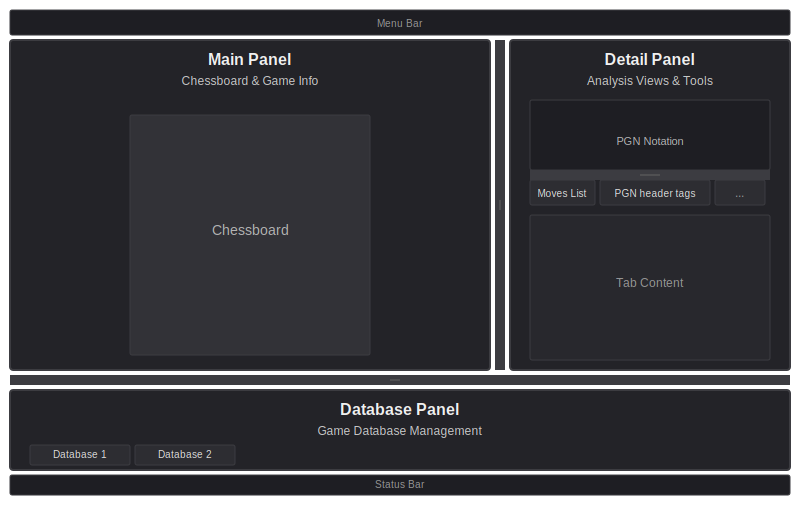- Main Panel (left): Displays the chessboard along with game information, evaluation bar, material widget, turn indicator, and other board-related widgets. This is the primary visual interface for reviewing games and positions.
- Detail Panel (right): Contains the PGN notation pane at the top, displaying the game's move notation, and tabbed views below for detailed analysis, including the Moves List, Metadata, Manual Analysis, Game Summary, Player Stats, Annotations, and AI Summary. This panel provides in-depth information and analysis tools.
- Database Panel (bottom): Manages your game collections with tabs for multiple PGN databases, searchable game tables, and column customization. This panel can be collapsed to maximize space for the main and detail panels.
You can resize any panel by dragging the splitter handles between them. The database panel can be collapsed by double-clicking its splitter handle or using (Ctrl+Shift+D / ⌘+Shift+D). The status bar at the bottom of the window displays status messages and progress indicators during long-running operations.
4.3 Main Panel Components
The Main Panel displays the chessboard along with game information and analysis widgets. The board updates automatically as you navigate through moves using the arrow keys.
4.3.1 Chessboard
The chessboard displays the current position.
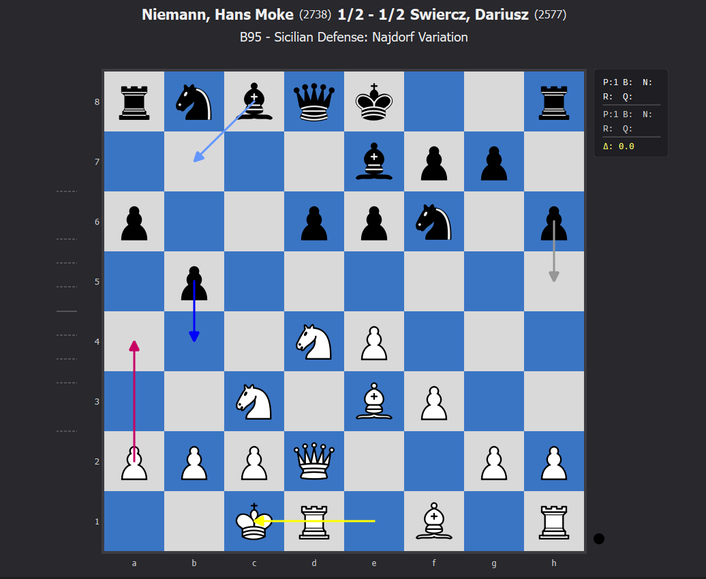Rotate the board 180 degrees using the X key or . Rotation is visual only and does not change the position—FEN notation always represents positions from White's perspective.
The following visual indicators can be toggled on or off:
- Coordinates: File and rank labels around the board edges. Toggle with
Alt+C/⌥+Cor . - Turn Indicator: Shows whose turn it is to move. Toggle with
Alt+T/⌥+Tor . - Played Move Arrow: Highlights the last move made in the game. Toggle with
Alt+P/⌥+Por . - Best Next Move Arrow (PV1): Shows the engine's recommended move during manual analysis mode. Toggle with
Alt+B/⌥+Bor . - PV2 and PV3 Arrows: Display alternative candidate moves from MultiPV analysis during manual analysis mode. Toggle with
Alt+2/⌥+2,Alt+3/⌥+3or . - Best Alternative Move Arrow: Highlights superior moves found after analyzing the game with the Game Analysis function. The arrow appears once analysis has been performed and indicates when the played move was not optimal. Toggle with
Alt+A/⌥+Aor . - Positional Heatmap: Color-coded overlay showing positional factors (weak squares, passed pawns, outposts, piece activity, king safety). Toggle with
Alt+H/⌥+Hor .
4.3.2 Game Information Display
The game information header at the top of the Main Panel shows:
- Player names and ELO ratings from the game PGN metatags
- Game result (1-0, 0-1, 1/2-1/2, or * for indecisive results)
- Opening ECO code and name (e.g., "A00 - Unknown Opening")
Toggle visibility with Alt+I / ⌥+I or .
4.3.3 Evaluation Bar
The evaluation bar appears on the left side of the chessboard and shows the engine's evaluation of the current position. The bar uses white and black colors: positive values (White advantage) are shown in white extending upward from the center, negative values (Black advantage) are shown in black extending downward from the center. The scale ranges from -1000 to +1000 centipawns, with division marks at 100, 200, 300, 500, and 1000 centipawns to help gauge the evaluation magnitude. Toggle with Alt+E / ⌥+E or . When the evaluation bar is shown, the status bar displays detailed engine information including the engine name, search depth, evaluation score, principal variation, and performance metrics such as nodes per second and hash table usage.
Note: The evaluation bar requires a chess engine to be assigned to the evaluation task. See section 5.1 for instructions on configuring engines.
4.3.4 Material Widget
The material widget appears in the upper right corner of the chessboard and shows captured pieces and the material difference between the two sides. The widget updates automatically as you navigate through the game. Toggle with Alt+U / ⌥+U or .
The widget is divided into three distinct sections, reading from top to bottom:
- Top section (White's captures): Displays pieces that White has captured from Black. The piece letters (P, N, B, R, Q) are always visible in light/white text color. Each letter is followed by a colon and a number indicating how many of that piece type have been captured. For example, "R:1" means White has captured one rook from Black, while "R:" (with no number after the colon) means no rooks have been captured yet.
- Middle section (Black's captures): Displays pieces that Black has captured from White, using the same notation format as the top section. The piece letters are shown in dark/gray text color to distinguish them from White's captures. For example, if you see "Q:1" in this section, it means Black has captured one queen from White.
- Bottom section (Material difference): Shows the material balance using the delta symbol (Δ) followed by a value in pawns. The notation appears as "Δ: ±X.X" where the value represents the material advantage. Positive values (e.g., "Δ: +2.0") indicate White has a material advantage, while negative values (e.g., "Δ: -1.0") indicate Black has the advantage. The calculation uses standard piece values: Pawn = 1.0, Knight/Bishop = 3.0 each, Rook = 5.0, and Queen = 9.0. This gives you a quick visual reference to see who's ahead in material at any point in the game.
Pieces are displayed using standard chess notation letters: P for Pawn, N for Knight, B for Bishop, R for Rook, and Q for Queen.
4.3.5 Turn Indicator
The turn indicator shows which side is to move in the current position. Toggle with Alt+T / ⌥+T or .
4.3.6 Positional Heatmap
The positional heatmap is a color-coded overlay that visualizes positional factors for each piece on the chessboard. It helps you quickly identify positional strengths and weaknesses by displaying colored gradients on squares containing pieces.
Toggle with Alt+H / ⌥+H or .
The heatmap evaluates nine positional factors:
- Passed Pawns: Pawns with no enemy pawns in front of them on the same or adjacent files. These are generally advantageous and shown in green.
- Backward Pawns: Pawns behind friendly pawns that cannot advance safely. These are positional weaknesses shown in red.
- Isolated Pawns: Pawns with no friendly pawns on adjacent files. These are vulnerable and shown in red.
- Doubled Pawns: Multiple pawns on the same file. These reduce pawn mobility and are shown in red.
- King Safety: Evaluates king safety based on open files, pawn shield, and exposure. Unsafe kings are shown in red, well-protected kings in green.
- Weak Squares: Squares that cannot be defended by pawns. Pieces on weak squares are shown in red.
- Piece Activity: Evaluates piece mobility and central control. Active pieces with good mobility are shown in green, inactive pieces in red.
- Undeveloped Pieces: Pieces still on starting squares and blocked. These are shown in red.
- Outpost Squares: Squares protected by friendly pawns that cannot be attacked by enemy pawns. Pieces on outpost squares (especially knights) are shown in green.
Color Coding: The heatmap uses color gradients to represent positional scores:
- Green: Positive positional factors (strong positions, active pieces, passed pawns, outposts)
- Red: Negative positional factors (weak squares, inactive pieces, pawn weaknesses, exposed kings)
- Yellow: Neutral positions (scores near zero)
The intensity of the color indicates the strength of the positional factor—darker colors represent stronger effects. The heatmap only displays on squares that contain pieces, and each piece is evaluated from its own color's perspective.
Tooltip Information: Hovering your mouse over any piece displays a detailed tooltip showing:
- The piece's overall positional assessment
- Specific positional factors affecting the piece (with checkmarks for positive factors and warning symbols for negative factors)
- Position status (whether the piece is under attack, defended, or both)
- The combined evaluation score and breakdown by rule
This detailed information helps you understand why a piece is evaluated as strong or weak and which specific positional factors contribute to the assessment.
4.4 Database Panel
The Database Panel, located at the bottom of the application window, manages your chess game collections. It displays all open PGN databases in a tabbed interface, allowing you to work with multiple game collections simultaneously. Each database appears in its own tab, and you can switch between them by clicking the tab labels.
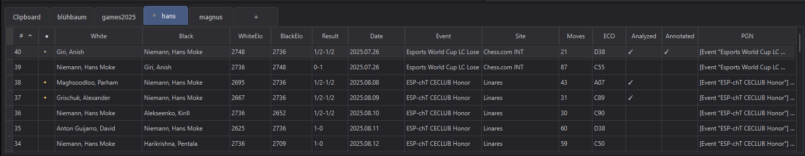4.4.1 Database Tabs
The panel uses tabs to organize multiple databases:
- Clipboard Tab: Always appears first and contains games that have been pasted or imported temporarily. Unlike regular database tabs that are linked to PGN files on your computer, the Clipboard database itself does not exist as a file on disk. It's a special temporary database perfect for quickly pasting PGN games into the app. You can save its contents to a new PGN file at any time using (
Ctrl+Shift+S/⌘+Shift+S), or clear it at any time using (Ctrl+Shift+C/⌘+Shift+C). - File-Based Database Tabs: Each opened PGN file appears as a separate tab, labeled with the filename (without extension). You can open multiple PGN files simultaneously, each in its own tab.
- Search Results Tab: When you perform a search across databases, the results appear in a dedicated "Search Results" tab. This tab includes an additional "Source DB" column showing which database each game came from.
- "+" Tab: Always appears last. Clicking this tab opens the file dialog to add a new PGN database to the panel.
Each tab displays a pulsing orange dot indicator when the database has unsaved changes. This visual reminder helps you track which databases need to be saved. The indicator appears next to the tab label and pulses continuously until the database is saved.
4.4.2 Game Table
Each database tab displays a table listing all games in that database. The table includes the following columns:
- #: Game number within the database
- ●: Indicates which games have unsaved changes
- White: White player's name
- Black: Black player's name
- WhiteElo: White player's ELO rating
- BlackElo: Black player's ELO rating
- Result: Game result (1-0, 0-1, 1/2-1/2, or *)
- Date: Game date
- Event: Tournament or event name
- Site: Location where the game was played
- Moves: Number of moves in the game
- ECO: Opening classification code
- Analyzed: Indicates whether the game has been analyzed
- Annotated: Indicates whether the game has custom CARA annotations (distinct from regular PGN notation annotations)
- Source DB: (Search Results only) Shows which database the game originated from
- PGN: Full PGN notation for the game
4.4.3 Interacting with the Table
You can interact with the game table in several ways:
- Selecting Games: Click a row to select a single game. Use
Shift+Clickto select a range of games, orCtrl+Click/⌘+Clickto select multiple individual games. - Opening Games: Double-click any row to open that game in the main panel for review and analysis. The chessboard, moves list, and all other views update to show the selected game.
- Sorting: Click any column header to sort the table by that column. Click again to reverse the sort order. The sort indicator arrow shows the current sort column and direction.
- Resizing Columns: Drag the borders between column headers to resize columns. Most columns can be resized, while the PGN column always stretches to fill the remaining space.
4.4.4 Panel Management
The Database Panel can be collapsed to maximize space for the main and detail panels. Double-click the horizontal splitter handle above the panel, or use (Ctrl+Shift+D / ⌘+Shift+D) to toggle its visibility. When collapsed, the panel is minimized to a thin strip, and you can expand it again using the same method.
The panel automatically updates when games are added, removed, or modified in any database. Changes are reflected immediately in the table view, and unsaved indicators appear as needed to help you track which databases contain games with unsaved changes.
4.4.5 Common Database Actions
You can perform common database operations using the File menu or keyboard shortcuts:
- Open PGN Database: Use (
Ctrl+O/⌘+O) to open one or multiple PGN files. In the file dialog, you can select multiple files by clicking and dragging, holdingCtrl/⌘for individual selection, orShiftfor range selection. Each file appears as a separate tab in the Database Panel. - Save PGN Database: Use (
Ctrl+S/⌘+S) to save the active database. This overwrites the existing database file with the current contents. - Save PGN Database as...: Use (
Ctrl+Shift+S/⌘+Shift+S) to save the active database as a new copy. - Close PGN Database: Use (
Ctrl+W/⌘+W) to close the active database tab.
Ctrl+V / ⌘+V) to paste into the Clipboard database, or (Ctrl+Alt+V / ⌘+⌥+V) to paste into the active database instead.
4.5 Detail Panel
The Detail Panel contains the PGN Notation Pane at the top and a set of tabbed views below for detailed analysis.
The PGN Notation Pane displays the complete PGN notation for the current game. The PGN notation contains several different types of elements:
- Moves: The actual chess moves displayed in standard algebraic notation (e.g., e4, Nf3, O-O). These are the main-line moves that make up the game sequence.
- Comments: Text annotations that explain moves or positions. Comments can appear after moves or at the beginning of variations to provide additional context or analysis.
- Variations: Also called branches, these show alternative lines of play. Variations are enclosed in parentheses and represent moves that could have been played instead of the main-line moves.
- Annotations: Move quality assessments that include symbol-based annotations (!, !!, ?, ??, !?, ?!) and NAGs (Numeric Annotation Glyphs). When PGN files are loaded, symbol-based annotations are automatically converted to NAGs (Numeric Annotation Glyphs) by the PGN parser, and both are displayed as readable text descriptions in parentheses (e.g., "good move", "poor move", "very good move", "very poor move", "speculative move", "questionable move", "White has a slight advantage").
- Non-standard tags: Special tags that some chess software uses to encode additional information within comments, such as clock times, position evaluations, or material balance data. These appear as codes like [%evp] and [%mdl] within comment text.
- Metadata tags: PGN header tags (Event, Site, Date, White, Black, Result, ECO, etc.) that provide information about the game, players, and tournament details.
- Game result: The final outcome of the game (1-0 for White wins, 0-1 for Black wins, 1/2-1/2 for a draw).
The content is displayed in a formatted, color-coded view with syntax highlighting to distinguish between different elements.
As you navigate through the game using the ← (Left Arrow) and → (Right Arrow) keys, the active move is highlighted in the PGN notation. Alternatively, you can click on any main-line move in the PGN notation to jump directly to that position in the game. Note that clicking on variation moves, comments, or metadata tags does not trigger navigation—only main-line moves are clickable.
You can control what elements are displayed in the PGN Notation Pane using the PGN menu. The following options are available:
- (
Ctrl+M/⌘+M): Toggle display of PGN header tags (Event, Site, Date, etc.) - (
Ctrl+Shift+M/⌘+Shift+M): Toggle display of move comments - (
Ctrl+Shift+V/⌘+Shift+V): Toggle display of move variations - (
Ctrl+Shift+T/⌘+Shift+T): Toggle display of non-standard tags like [%evp] and [%mdl] within comments - (
Ctrl+Shift+A/⌘+Shift+A): Toggle display of move annotations, including symbol-based annotations (!, !!, ?, ??, !?, ?!) and NAGs (Numeric Annotation Glyphs). - (
Ctrl+R/⌘+R): Toggle display of game results (1-0, 0-1, 1/2-1/2)
The PGN menu also provides options to permanently remove elements from the game's PGN. The following options are available:
- : Permanently remove all comments from the game's PGN notation
- : Permanently remove all move variations from the game's PGN notation
- : Permanently remove non-standard tags (like [%evp] and [%mdl]) from comments in the game's PGN
- : Permanently remove all move annotations (symbols and NAGs) from the game's PGN notation
These changes modify the game's actual PGN content which will persist when you save the database.
Below the PGN Notation Pane, the Detail Panel contains seven tabs, each offering distinct functionality for analyzing and working with the active game:
4.5.1 Moves List
The Moves List tab displays all moves in a table format with comprehensive per-move information. The table includes columns for move notation, evaluations, move classifications, best move alternatives, Centipawn Loss (CPL) values, engine depth, material counts, FEN positions, and more. You can customize which columns are visible and their display order using column profiles. The active move is highlighted as you navigate through the game. You can click on any move in the table to jump to that position in the game. Access this tab using or press F1.
The application comes with several pre-configured column profiles that organize the available columns for different analysis purposes. Switch between profiles using the number keys 1 through 9 (assigned to the first nine profiles in order), or select them from the menu. The following default profiles are available:
- Default (
1): A minimal view showing only the move number, White and Black moves, and comments. Use this profile when you want a clean, uncluttered view focused on the moves themselves. - Moves and Opening Info (
2): Displays moves along with ECO codes and opening names. This profile is useful for studying opening theory and identifying which openings were played in your games. - Game Analysis - Full (
3): Shows the most important analysis columns for both White and Black moves, including evaluations, CPL values, move assessments, best move alternatives, engine depth, and top-3 move indicators. Use this comprehensive profile when you want to analyze both sides' play in detail, comparing evaluations and move quality for the entire game. - Game Analysis - White Side (
4): Focuses exclusively on White's moves and their analysis. All White-related columns are visible (evaluations, CPL, assessments, best moves, depth), while Black's analysis columns are hidden. This profile is ideal when you played White and want to focus on analyzing your own moves without the distraction of your opponent's move evaluations. - Game Analysis - Black Side (
5): Focuses exclusively on Black's moves and their analysis. All Black-related columns are visible, while White's analysis columns are hidden. Use this profile when you played Black and want to concentrate on your own moves.
You can modify any of these default profiles or create your own custom profiles. For smaller adjustments, you can reorder columns by dragging and dropping column headers in the moves list, resize columns by dragging column borders, and show or hide columns using the menu. For configuring multiple columns at once, use which provides a convenient dialog for managing all column settings. After making changes, save them with (to update the current profile) or (to create a new profile with a custom name). Custom profiles you create will also be accessible via number keys 1 through 9 based on their position in the profile list.
For a complete reference of all available columns and their descriptions, see section 7.7 "Moves List Columns Reference".
4.5.2 Metadata
The Metadata tab displays all PGN header tags (metadata) for the current game in an editable table format. You can view, edit, add, and remove tags. Common tags include Event, Site, Date, Round, White, Black, Result, ECO, WhiteElo, and BlackElo. Changes to metadata are applied to the game's PGN data in memory. The database is marked as having unsaved changes, and your modifications will be persisted to the database file when you save it. Access this tab using or press F2.
To edit a tag value, double-click on the value cell in the table and type the new value. Tag names cannot be edited, but you can remove a tag and add a new one with a different name if needed. To add a new tag, click the Add button at the top of the metadata view, enter the tag name and value in the dialog, then click OK. To remove a tag, select the tag row in the table and click the Remove button. You will be asked to confirm the removal. Note that some tags (such as CARA analysis and annotation tags) are read-only and cannot be edited or removed.
4.5.3 Manual Analysis
The Manual Analysis tab provides continuous engine analysis of the current position with MultiPV (Multiple Principal Variations) support. Access this tab using or press F3.
Note: Manual analysis requires a chess engine to be assigned to the manual analysis task. See section 5.1 for instructions on configuring engines.
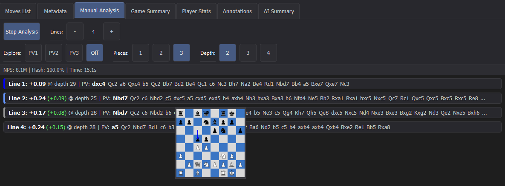MultiPV Analysis: The standard analysis mode displays multiple candidate moves and their evaluations. You can analyze any number of principal variation lines simultaneously, each displaying the engine's recommended moves, evaluations, and depths. The first three PV lines (PV1, PV2, PV3) have color-coded indicators in the analysis display that match the colors of the corresponding arrows on the chessboard when enabled. This visual connection helps you quickly identify which analysis line corresponds to which arrow on the board. The following options are available:
- (
Alt+M/⌥+M): Start or stop continuous engine analysis of the current position - (
Alt+N/⌥+N): Add an additional principal variation line - (
Alt+R/⌥+R): Remove the last added PV line (requires at least two lines) - : Toggle display of a miniature board preview when hovering over PV moves
Positional Plan Exploration: This unique feature helps you understand the engine's positional plans by visualizing where the engine wants to move specific pieces and how they coordinate through the recommended sequence. Instead of just seeing individual moves, you can see the complete trajectory of each piece—where it starts, where it moves to, and the path it takes through multiple moves. The system automatically identifies the pieces that move most frequently in each PV line and tracks their movement patterns. Each of these selected pieces is assigned a distinct color and highlighted in that color in the PV display, while on the chessboard, their trajectories are visualized as colored lines connecting the squares each piece visits through the engine's suggested sequence. This helps you recognize positional themes, piece coordination patterns, and strategic plans that might not be immediately obvious from traditional engine analysis alone.
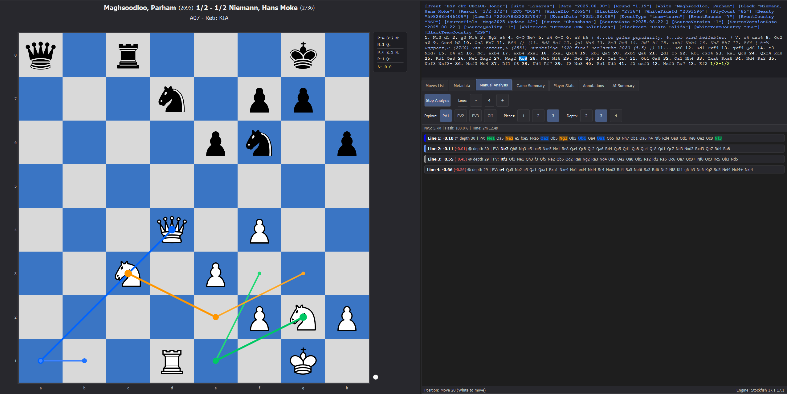The following options are available:
- : Enable plan exploration for the first principal variation line
- : Enable plan exploration for the second principal variation line
- : Enable plan exploration for the third principal variation line
- : Configure how many pieces to track in the trajectory visualization (1-3 pieces). The system selects the pieces that move most frequently in the PV line up to this limit
- : Set the exploration depth for piece trajectories (2-4 moves ahead), determining how many moves into the future the trajectory visualization extends
4.5.4 Game Summary
The Game Summary tab provides a comprehensive overview of the current game by synthesizing data from the Game Analysis function into key performance indicators (KPIs) and valuable insights. Access this tab using or press F4.
Ctrl+G / ⌘+G).
Evaluation Graph: At the top of the view, a visual graph shows how the position evaluation changed throughout the game over time. The graph includes indicators marking phase transitions (opening to middlegame, middlegame to endgame) and highlights the worst and best moves for each player, making it easy to see critical moments and how the game's balance shifted. The graph is displayed in a resizable panel that can be adjusted to show more or less detail.
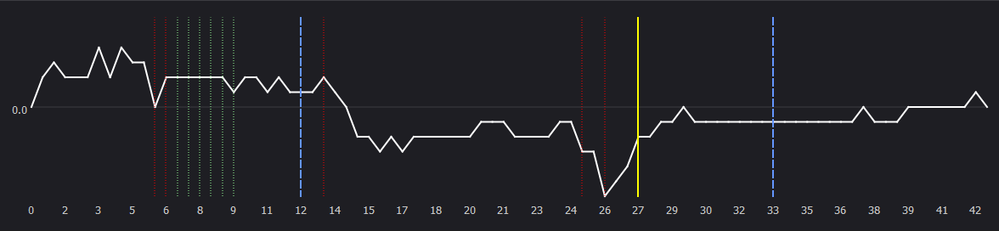The evaluation graph supports two display modes that you can toggle using (Ctrl+Shift+N / ⌘+Shift+N):
- Zero-based mode: In this mode, 0.00 (equal position) is displayed at the bottom of the graph. Positive evaluations (White advantage) extend upward, and negative evaluations (Black advantage) extend downward from the zero line.
- Normalized mode: In this mode, 0.00 (equal position) is displayed in the middle of the graph with a symmetric scale. This mode is particularly useful for games with large evaluation swings, as it provides better visual balance and makes it easier to see relative changes in evaluation throughout the game.
Key Statistics: The summary displays per-player statistics for both White and Black, including:
- Accuracy percentage: Overall move quality score based on analysis
- Average Centipawn Loss (CPL): Average deviation from optimal play measured in centipawns
- Estimated ELO: An estimated playing strength rating based on the player's move quality in this specific game. This is a best-effort approximation that may not accurately reflect a player's true rating, especially since it's calculated from a single game rather than a statistical sample across many games. The estimate considers average move quality, blunders, and mistakes to provide a rough indication of playing strength, but should be interpreted with caution.
Move Classification: The view displays pie charts showing the distribution of move quality throughout the game for each player. You can see how many moves were strong (Best Move, Good Move, Brilliant) versus how many were errors (Inaccuracy, Mistake, Blunder), giving you a quick visual overview of each player's performance. The charts also show book moves and missed opportunities.
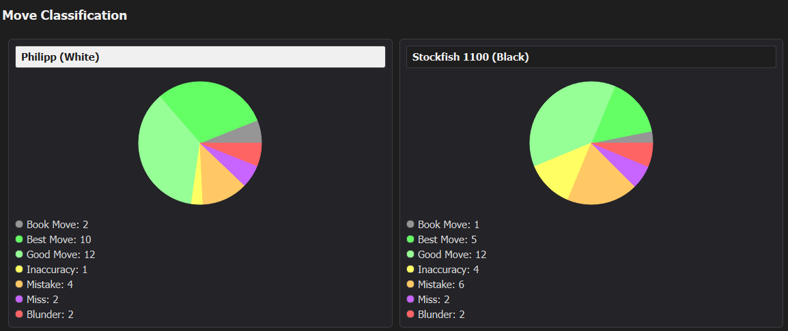Phase Analysis: The view breaks down performance for each player across the three phases of a chess game—Opening, Middlegame, and Endgame—showing how each player performed in different stages of the game. This helps you identify strengths and weaknesses in specific phases. Each phase section shows accuracy, average CPL, and move counts for that phase. The system automatically detects phase boundaries based on opening theory, material exchanges, and endgame classification. When an endgame is detected, the system also classifies the specific endgame type (such as Pawn Endgame, Rook Endgame, Minor Piece Endgame, or Queen Endgame) based on the material composition, which is displayed in the phase analysis section.
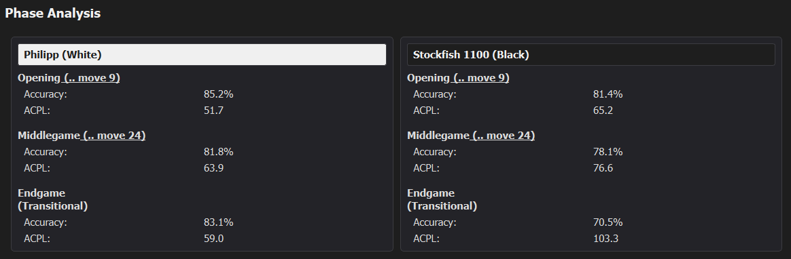Game Highlights: The view displays detected tactical and positional patterns that occurred during the game. Highlights are organized by game phase and help you quickly identify key moments. Each highlight entry is a clickable link that navigates directly to the move where the pattern occurred, allowing you to quickly review the position and context.
Critical Moments: The summary identifies the top best and worst moves for each player, allowing you to quickly review and navigate to critical moments in the game. Each critical moment shows the move number, move notation, evaluation, and best alternative move when applicable. Each critical moment entry is a clickable link that navigates directly to that move in the game, making it easy to jump to and analyze these important positions.
This comprehensive overview helps you quickly understand the flow of the game, identify critical moments, and assess each player's performance across different phases of play.
4.5.5 Player Stats
The Player Stats tab displays extensive aggregated statistics across multiple games for any selected player. Access this tab using or press F5.
Requirements: This view is only available for players who have at least two analyzed games in the selected data source. You can choose to analyze players from either the active database or all open databases.
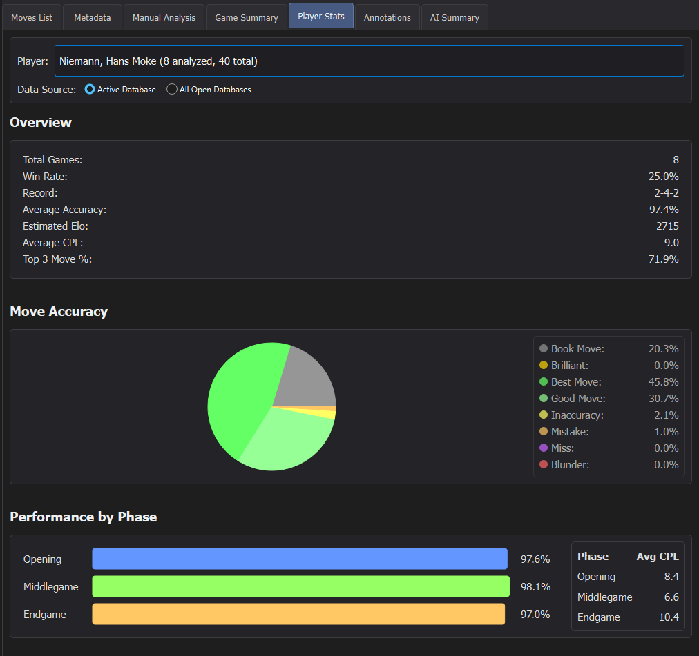Overall Performance: The system aggregates statistics from all analyzed games for the selected player, calculating overall performance metrics including accuracy, average Centipawn Loss, estimated ELO, win rate, and move classification distributions.
Phase Breakdown: The view breaks down performance by game phase (Opening, Middlegame, Endgame), showing how the player performs in different stages of play. This helps identify strengths and weaknesses in specific phases.
Opening Analysis: The system tracks opening usage and accuracy, identifying which openings the player plays most frequently and how well they perform in each opening.
Error Pattern Detection: The system automatically detects error patterns such as phase-specific blunder tendencies, tactical misses, opening-specific errors, consistently high Centipawn Loss, missed opportunities, and conversion issues in winning positions.
Background Updates: The view updates asynchronously in the background when databases change, ensuring you always have current data without blocking the interface.
4.5.6 Annotations
The Annotations tab provides tools for creating and managing custom CARA annotations on the chessboard. Unlike regular PGN annotations, CARA annotations include free-form text that can be positioned anywhere on the board, adjusted in size and rotated.
You can also add arrows, circles, and square highlighting with customizable colors. Annotations are position-specific, attached to individual moves in the game, and are compressed and serialized in a PGN metadata tag to keep the PGN move notation clean.
Access this tab using or press F6.
4.5.7 AI Summary
The AI Summary tab provides an interactive chat interface for discussing any position in a game with a Large Language Model (LLM). The AI model has access to extensive game data, including detailed engine analysis, move classifications, evaluation metrics, and positional information, enabling it to provide accurate assessments of the game, played moves, and current position. You can ask questions about the game, request explanations of moves, or generate summaries. Access this tab using or press F7.
4.6 Keyboard Shortcuts
Below you can find a list of the most common keyboard shortcuts, allowing you to work efficiently with the features described in this section. For a complete reference of all keyboard shortcuts organized by category, see section 6.12.
4.6.1 Navigation
←(Left Arrow): Navigate to the previous move in the game→(Right Arrow): Navigate to the next move in the game
4.6.2 Board Controls
X: Rotate the board 180 degreesAlt+C/⌥+C: Toggle coordinates displayAlt+T/⌥+T: Toggle turn indicatorAlt+P/⌥+P: Toggle played move arrowAlt+B/⌥+B: Toggle best next move arrow (PV1)Alt+2/⌥+2: Toggle PV2 arrowAlt+3/⌥+3: Toggle PV3 arrowAlt+A/⌥+A: Toggle best alternative move arrowAlt+H/⌥+H: Toggle positional heatmapAlt+E/⌥+E: Toggle evaluation barAlt+U/⌥+U: Toggle material widgetAlt+I/⌥+I: Toggle game information displayAlt+L/⌥+L: Toggle annotations layer
4.6.3 Database Operations
Ctrl+Shift+F/⌘+Shift+F: Search games across databasesCtrl+Shift+W/⌘+Shift+W: Close search resultsCtrl+Shift+I/⌘+Shift+I: Import online gamesCtrl+Shift+R/⌘+Shift+R: Bulk replace in databasesCtrl+Alt+T/⌘+⌥+T: Bulk tag gamesCtrl+Shift+L/⌘+Shift+L: Bulk clean PGNCtrl+Shift+U/⌘+Shift+U: Deduplicate games
4.6.4 Detail Panel Tabs
F1: Switch to Moves List tabF2: Switch to Metadata tabF3: Switch to Manual Analysis tabF4: Switch to Game Summary tabF5: Switch to Player Stats tabF6: Switch to Annotations tabF7: Switch to AI Summary tab
4.6.5 Game Analysis
Ctrl+G/⌘+G: Start game analysis for the current gameEscape: Cancel ongoing game analysisCtrl+Shift+N/⌘+Shift+N: Toggle normalized evaluation graph modeCtrl+Shift+K/⌘+Shift+K: Configure move classification settings
4.6.6 Manual Analysis
Alt+M/⌥+M: Start or stop continuous engine analysis of the current positionAlt+N/⌥+N: Add an additional principal variation lineAlt+R/⌥+R: Remove the last added PV line
4.6.7 File Operations
Ctrl+O/⌘+O: Open PGN databaseCtrl+S/⌘+S: Save active PGN databaseCtrl+Shift+S/⌘+Shift+S: Save active PGN database as...Ctrl+W/⌘+W: Close active PGN databaseCtrl+Q/⌘+Q: Close application
4.6.8 Edit Operations
Ctrl+V/⌘+V: Paste PGN to Clipboard databaseCtrl+Alt+V/⌘+⌥+V: Paste PGN to active databaseCtrl+P/⌘+P: Copy PGN to clipboardShift+F: Copy FEN to clipboardCtrl+F/⌘+F: Paste FEN to boardCtrl+Shift+C/⌘+Shift+C: Copy selected gamesCtrl+Shift+X: Cut selected games
4.6.9 PGN Display Options
Ctrl+M/⌘+M: Toggle metadata displayCtrl+Shift+M/⌘+Shift+M: Toggle comments displayCtrl+Shift+V/⌘+Shift+V: Toggle variations displayCtrl+Shift+T/⌘+Shift+T: Toggle non-standard tags displayCtrl+Shift+A/⌘+Shift+A: Toggle annotations displayCtrl+R/⌘+R: Toggle results display
4.6.10 Moves List Profiles
1-9: Switch to column profile 1 through 9Ctrl+Shift+P/⌘+Shift+P: Save current profileCtrl+Alt+P/⌘+⌥+P: Save current profile as...Ctrl+Shift+Delete/⌘+Shift+Delete: Remove current profile
4.6.11 Annotations
Ctrl+Alt+S: Save annotationsCtrl+Shift+D/⌘+Shift+D: Clear all annotationsCtrl+Alt+D: Clear move annotations
4.6.12 View Options
Ctrl+Shift+D/⌘+Shift+D: Toggle database panel visibility
4.6.13 Engine Configuration
Ctrl+E: Add or configure chess engine
4.7 Your First Game Analysis
Follow these steps to analyze your first game:
- Ensure you have a chess engine configured:
Before starting, make sure you have at least one UCI-compatible chess engine added to CARA. See section 5.1 for instructions on configuring engines. If you're unsure which engine to choose, Stockfish is an excellent free option to get started. - Open a game or paste PGN:
Open a PGN database using (Ctrl+O/⌘+O), or paste PGN text into the Clipboard database using (Ctrl+V/⌘+V)—the pasted game gets loaded automatically. - Switch to the Moves List view:
PressF1to switch to the Moves List tab, then press3to select the "Game Analysis - Full" profile. This profile displays all the important analysis columns you'll need to review the game. - Start the game analysis:
PressCtrl+G/⌘+G(or use ) to begin analyzing the game. Watch as the moves list fills in with evaluation data, move classifications, CPL values, and best move alternatives as the analysis progresses. Progress and estimated time remaining are shown in the status bar. - Review the results:
Once analysis completes, you can review the per-move analysis directly in the Moves List, or pressF4to switch to the Game Summary tab for a condensed overview showing key statistics, the evaluation graph, critical moments, and detected game highlights.
5. Common Tasks
5.1 Configuring Engines
CARA requires at least one UCI-compatible chess engine to perform game analysis. Adding your first engine is straightforward and doesn't require any special configuration—default settings are usually sufficient to get started.
There are two general types of chess engines you can use with CARA:
- Conventional alpha-beta search engines (e.g., Stockfish, Berserk, Komodo): These engines use traditional search algorithms and are typically faster, making them ideal for quick analysis and when you need responsive performance. They work well on standard CPUs and don't require specialized hardware.
- Neural network-based engines (e.g., Leela Chess Zero, Maia): These engines use machine learning models and often provide different evaluation perspectives compared to conventional engines. They are generally slower than conventional engines and may benefit from a powerful graphics card (GPU) for optimal performance. They can be useful when you want alternative analysis perspectives on positions. For example, with sufficient hardware, you can use neural network-based engines with the manual analysis function to get a different perspective than you would from using a conventional engine.
For most users, starting with a conventional engine like Stockfish is recommended due to its speed and strength. You can always add additional engines later to compare different analysis approaches.
5.1.1 Adding Your First Engine
To add your first engine:
- Open the engine dialog:
Use or pressCtrl+E. - Select the engine executable:
Click "Browse" to locate your chess engine executable file (e.g.,stockfish.exefor Stockfish on Windows). - Validate the engine:
CARA will automatically validate that the engine supports the UCI protocol. The engine name, author, and version will be detected automatically. - Add the engine:
Click "Add" to add the engine. The first engine you add will automatically be assigned to all analysis tasks (game analysis, evaluation, and manual analysis), so you can start analyzing games immediately. You can reassign this engine or add additional engines later (see section 5.1.2).
5.1.2 Adding Additional Engines and Advanced Configuration
Once you have your first engine set up, you can add additional engines and configure per-engine, per-task settings to optimize performance for different analysis scenarios:
- Multiple engines: You can add multiple engines and assign different engines to different tasks. For example, you might use a fast engine for continuous evaluation and a stronger engine for deep game analysis.
- Task assignment: Assign engines to specific tasks using . You can reassign engines between tasks at any time—only one engine can be assigned to each task at a time.
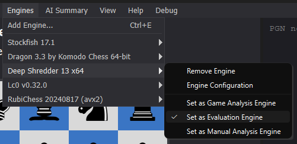 - Per-task configuration: Each engine can have separate settings for each task (evaluation, game analysis, and manual analysis). Configure these settings using to configure engine options for each task independently. This allows you to optimize the same engine differently for different analysis types.
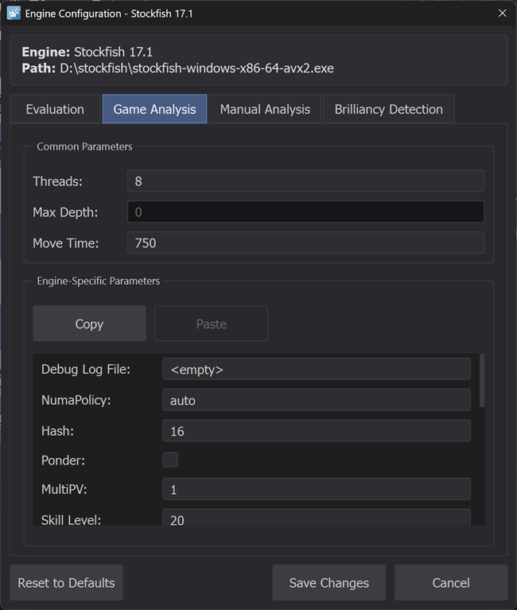The dialog includes "Copy..." buttons for each task that allow you to copy settings from one task to another, making it easy to duplicate configurations. The "Reset" button restores the recommended default settings for the selected task.
Quick Tip: Per-task engine configuration is an advanced setting. For most users, the default configurations will work fine and no manual configuration is necessary.
5.2 Importing Games
CARA provides several ways to import and open games. This section covers the three main methods.
5.2.1 Copy from System Clipboard
The quickest way to import a single game is to paste PGN text directly from your system clipboard:
- Copy PGN text:
Copy PGN game data from any source (website, text file, another application) to your system clipboard. - Paste into CARA:
Use (Ctrl+V/⌘+V) to paste into the Clipboard database, or (Ctrl+Alt+V/⌘+⌥+V) to paste into the currently active database. The pasted game gets loaded automatically and becomes the active game.
5.2.2 Open PGN File(s)
To import games from one or more PGN files on your computer:
- Open the file dialog:
Use (Ctrl+O/⌘+O) to open the file selection dialog. - Select files:
Select one or multiple PGN files from your computer. You can select multiple files using several methods: click and drag with your mouse to select a range of files, holdCtrlon Windows or⌘on macOS while clicking to select individual files, or holdShiftwhile clicking to select a range of files. - Load games:
Each selected file opens as a separate tab in the Database Panel. The first game from the first file automatically becomes the active game.
5.2.3 Import from Online Platforms
CARA can import games directly from online chess platforms:
- Open the import dialog:
Use (Ctrl+Shift+I/⌘+Shift+I) to open the import dialog. - Select platform and enter username:
Choose either Lichess or Chess.com, then enter the username of the player whose games you want to import. - Configure import options (optional):
You can optionally filter games by date range, game type (blitz, rapid, classical, etc.), and set a maximum number of games to import. - Choose destination:
Select whether to import games into the Clipboard database or the currently active database. - Start import:
Click "Import" to begin. CARA will fetch games from the platform's API and display progress in the status bar. Once complete, the imported games are added to your selected database.
5.3 Managing Databases
CARA provides several tools for managing your game databases, including basic file operations and powerful bulk operations for batch processing multiple games at once.
Ctrl+S / ⌘+S) or (Ctrl+Shift+S / ⌘+Shift+S). The unsaved changes indicator (orange dot) on database tabs helps you track which databases have unsaved modifications.
5.3.1 Basic Database Operations
For opening, saving, and closing databases, see section 4.4.5.
5.3.2 Bulk Replace Tags
Use (Ctrl+Shift+R / ⌘+Shift+R) to find and replace text in metadata tags across multiple games. This is useful for correcting typos, standardizing player names, or updating event information.
The dialog allows you to:
- Select a tag to modify (e.g., White, Black, Event, Site)
- Specify text to find and replace
- Choose between case-sensitive or case-insensitive matching
- Use regular expressions for advanced pattern matching
- Process all games or only selected games in the database table
The dialog also includes two smart update options:
- Update Result based on last move evaluation: Analyzes the final position of each game using a chess engine to determine the game result. This option only updates games with indecisive results (empty, "*", or "?"), preserving games that already have decisive results (1-0, 0-1, 1/2-1/2). It can detect checkmate or stalemate directly, or use engine evaluation to determine the likely result for incomplete games. This is useful if you are for example importing games from a chess computer, which doesn't provide a resign function.
- Update ECO code with played opening ECO: Analyzes the opening moves of each game and updates the ECO (Encyclopaedia of Chess Openings) tag based on the opening that was actually played. This uses CARA's built-in opening database to identify the correct ECO code from the game's move sequence.
5.3.3 Bulk Add/Remove Tags
Use (Ctrl+Alt+T / ⌘+⌥+T) to add or remove metadata tags across multiple games. This is useful for adding missing information or cleaning up tag sets.
The dialog allows you to:
- Add a new tag with a fixed value or copy from another tag
- Remove existing tags
- Process all games or only selected games in the database table
5.3.4 Bulk Clean PGN
Use (Ctrl+Shift+L / ⌘+Shift+L) to remove unwanted elements from PGN notation across multiple games.
The dialog allows you to remove:
- Comments
- Variations
- Non-standard tags
- Annotations (e.g., !, ?, !?, ?!)
- Results
You can select any combination of these options and process all games or only selected games in the database table.
5.3.5 Deduplicate Games
Use (Ctrl+Shift+U / ⌘+Shift+U) to identify and remove duplicate games from the active database.
The deduplication dialog allows you to choose how games are matched:
- Exact PGN: Matches games with identical PGN notation (including headers, moves, comments, and variations)
- Moves Only: Matches games with identical move sequences, ignoring headers, comments, and variations
- Normalized PGN: Matches games with identical PGN after removing comments and variations
- Header Based: Matches games based on selected header fields (e.g., White, Black, Date, Result)
When duplicates are found, the active game (if it's a duplicate) is preserved, and other duplicates are removed. Progress is displayed in the status bar during the operation.
5.4 Searching Games
CARA provides powerful search functionality to find games across your databases based on multiple criteria. You can search within a single database or across all open databases simultaneously, and combine criteria using logical operators (AND/OR) and grouping.
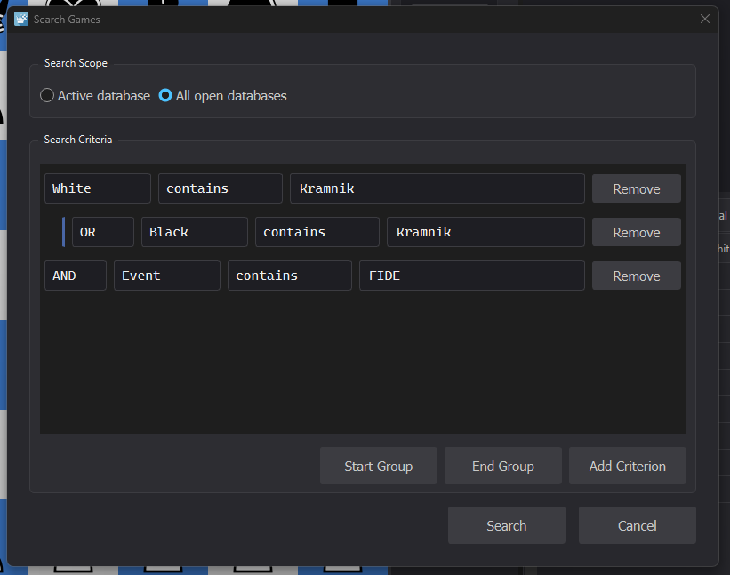5.4.1 Search Scope
When you open the search dialog using (Ctrl+F / ⌘+F), you can choose where to search:
- Active database: Search only within the currently active database tab.
- All open databases: Search across all open database tabs simultaneously. Results from different databases are combined and displayed in a dedicated "Search Results" tab with an additional "Source DB" column indicating which database each game came from.
5.4.2 Search Criteria
Each search criterion consists of three parts:
- Field: The game property to search (e.g., White, Black, WhiteElo, BlackElo, Result, Date, Event, Site, ECO, Analyzed, Annotated, or Custom PGN Tag).
- Operator: How to compare the field value. Available operators depend on the field type:
- Text fields (White, Black, Event, Site, ECO): contains, equals, not equals, starts with, ends with, is empty, is not empty
- Numeric fields (WhiteElo, BlackElo): equals, not equals, greater than, less than, greater than or equal, less than or equal
- Date field: equals, not equals, before, after, contains (for partial date matching, e.g., "2025" matches "2025.11.09")
- Boolean fields (Analyzed, Annotated): is, is not
- Value: The value to search for (not required for "is empty", "is not empty", or boolean fields).
For "Custom PGN Tag", you must also specify the tag name in an additional field that appears when this option is selected.
5.4.3 Logical Operators and Grouping
Search criteria are combined using logical operators (AND/OR) to create complex queries. By default, criteria are combined with AND logic, meaning all criteria must match for a game to be included in the results.
Each criterion row (except the first) has an AND/OR selector that determines how it relates to the previous criterion:
- AND: Both this criterion and the previous criterion must match (default).
- OR: Either this criterion or the previous criterion (or both) must match.
5.4.4 Grouping Criteria
For more complex searches, you can group criteria together using the "Start Group" and "End Group" buttons. Groups allow you to create logical expressions like "(A AND B) OR (C AND D)".
To create a group:
- Add criteria: Add the criteria you want to include in the group using "Add Criterion".
- Start the group: Click "Start Group" to mark the beginning of a group. This adds a new criterion row that is visually indented and marked as the group start.
- Add group criteria: Add additional criteria within the group. These will be visually indented to show they belong to the group.
- End the group: Click "End Group" to mark the end of the group. The last criterion before the end marker becomes the group end.
Groups can be nested to create complex logical expressions. Nested groups are visually indicated by increased indentation levels. The search system evaluates groups from innermost to outermost, allowing you to create sophisticated queries like "((A OR B) AND C) OR (D AND E)".
When a group is created, the AND/OR operator on the group start row determines how the entire group relates to criteria before it. Criteria within a group are combined according to their individual AND/OR operators.
5.4.5 Performing a Search
Once you've set up your search criteria:
- Review your criteria: Ensure all criteria have valid values and logical operators set correctly.
- Click "Search": CARA will search the selected database(s) and display matching games in a "Search Results" tab in the Database Panel.
- Review results: The search results tab shows all matching games. If you searched across multiple databases, each result includes a "Source DB" column indicating which database it came from.
The search dialog remembers your last search query during the current session, so you can easily modify and re-run searches. Double-click any game in the search results to open it for review.
5.5 Analyzing a Game
CARA's game analysis feature uses a chess engine to evaluate every move in a game, providing detailed insights into move quality, evaluation changes, and alternative moves. This section explains how to analyze a single game.
5.5.1 Starting Game Analysis
To analyze the currently active game:
- Ensure you have a game loaded:
Open a game from your database or paste a PGN game. The game must be active (displayed in the main panel). - Verify engine configuration:
Make sure you have at least one UCI-compatible chess engine configured and assigned to the game analysis task. If you haven't configured an engine yet, see section 5.1.1 for step-by-step instructions. For information about assigning engines to specific tasks, see section 5.1.2. - Start the analysis:
Use (Ctrl+G/⌘+G) to begin analyzing the game. CARA will automatically switch to the Moves List tab if configured to do so (see section 5.5.3).
During analysis, CARA processes each move sequentially, evaluating the position before and after each move, calculating Centipawn Loss (CPL), and classifying move quality. Progress is displayed in the status bar, showing the current move being analyzed, the engine name, search depth, and evaluation.
5.5.2 Understanding Analysis Results
As moves are analyzed, the Moves List shows detailed information for each move:
- Evaluation: The engine's evaluation of the position after each move (in centipawns, from White's perspective).
- Centipawn Loss (CPL): How much worse the played move is compared to the best move, measured in centipawns (where 100 centipawns = 1 pawn). Lower values are better. A CPL of 0 means the best move was played.
- Move Classification: Each move is classified as one of:
- Book Move: A move found in the opening book database
- Brilliant: An exceptional move involving material sacrifice that leads to a significant advantage
- Best Move: The engine's recommended move was played
- Good Move: A solid move with low CPL
- Inaccuracy: A suboptimal move that loses some evaluation but doesn't significantly change the game
- Mistake: A poor move that significantly worsens the position
- Miss: A missed opportunity (e.g., missing a winning move or allowing a draw)
- Blunder: A catastrophic move that dramatically changes the evaluation
- Best Alternative Move: The engine's recommended move for each position, displayed in the Moves List. The best alternative move arrow on the chessboard highlights this move visually.
- Engine Depth: The search depth reached by the engine for each position.
Ctrl+Shift+K / ⌘+Shift+K).
You can review this information in the Moves List, or switch to the tab (F4) for a condensed overview of key game moments, statistics, and highlights.
5.5.3 Analysis Settings
CARA provides several settings to customize the analysis workflow:
- Switch to Moves List at Start of Analysis: Automatically switches to the Moves List tab when analysis begins (enabled by default).
- Return to PLY 0 after analysis completes: Automatically navigates to the starting position (PLY 0) when analysis completes.
- Switch to Game Summary after Analysis: Automatically switches to the Game Summary tab when analysis completes.
- Store Analysis Results in PGN Tag: Saves analysis data (evaluations, CPL, classifications) in a PGN metadata tag for persistence across sessions.
These settings can be toggled in the menu and are saved in your user settings.
5.5.4 Cancelling Analysis
You can cancel an ongoing analysis at any time using or press Escape. When cancelled, analysis stops at the current move, and all moves analyzed up to that point retain their analysis data.
5.5.5 Bulk Analysis
To analyze multiple games at once, use .
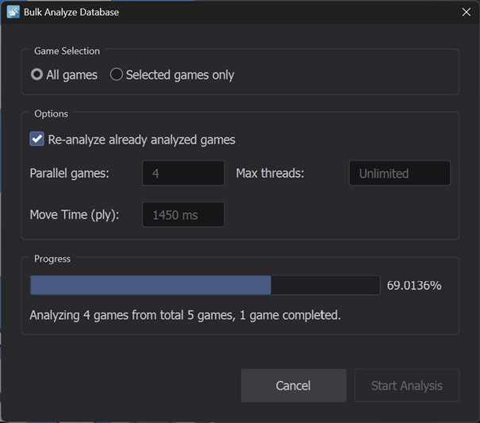CARA automatically optimizes available CPU cores to analyze multiple games in parallel, maximizing analysis speed. Progress and estimated time remaining are displayed in the status bar, and you can cancel and resume bulk analysis at any time.
5.6 Manual Analysis
Manual Analysis provides continuous engine analysis of any position, allowing you to explore candidate moves and understand the engine's recommendations in real-time. Unlike game analysis which processes all moves in a game, manual analysis focuses on the current position and updates continuously as you navigate through the game.
5.6.1 Starting Manual Analysis
To start analyzing the current position:
- Navigate to the position:
Use the arrow keys or click moves in the Moves List to navigate to the position you want to analyze. - Switch to Manual Analysis tab:
Navigate to the tab in the Detail Panel (F3). - Start analysis:
Use (Alt+M/⌥+M) to begin continuous analysis. The engine will analyze the current position and display principal variation lines with evaluations, depths, and move sequences.
Analysis continues automatically as you navigate to different positions in the game. To stop analysis, use the same menu item or keyboard shortcut again.
5.6.2 MultiPV Analysis
Manual Analysis supports MultiPV (Multiple Principal Variations), allowing you to see multiple candidate moves simultaneously. By default, analysis shows one principal variation line (PV1). You can add additional lines to compare different candidate moves:
- Add PV Line: Use (
Alt+N/⌥+N) to add another principal variation line. You can add as many lines as needed. - Remove PV Line: Use (
Alt+R/⌥+R) to remove the last added line (requires at least two lines).
Each PV line displays the engine's recommended move sequence, evaluation, search depth, and performance metrics. The first three PV lines (PV1, PV2, PV3) have color-coded indicators that match the colors of the corresponding arrows on the chessboard when enabled, helping you visually connect the analysis lines to the board arrows.
5.6.3 Exploring Variations
You can explore variations by hovering over moves in the PV lines:
- Miniature Board Preview: Enable to display a small board preview when hovering over moves in the PV lines. This shows the resulting position if that move were played.
- PV Arrows on Board: The PV1, PV2, and PV3 arrows on the chessboard (toggle with
Alt+B/⌥+B,Alt+2/⌥+2,Alt+3/⌥+3) show the recommended moves from each analysis line, making it easy to see candidate moves visually.
5.6.4 Positional Plan Exploration
Positional Plan Exploration visualizes how pieces move through the engine's recommended sequence, helping you understand strategic plans and piece coordination. Instead of just seeing individual moves, you can see complete piece trajectories—where pieces start, where they move, and the path they take through multiple moves.
To explore positional plans:
- Enable plan exploration:
Use , , or to enable plan exploration for a specific PV line. Only one plan can be active at a time. - Configure exploration settings:
Use to set how many pieces to track (1-3 pieces). The system automatically selects the pieces that move most frequently in the PV line. Use to set how many moves ahead to visualize (2-4 moves).
When enabled, the chessboard displays colored lines showing the trajectory of each tracked piece through the engine's recommended sequence. Each piece is assigned a distinct color that matches its indicator in the PV display, making it easy to follow piece movement patterns and understand positional themes.
5.7 Viewing Player Statistics
The Player Stats tab provides aggregated statistics across multiple games for any selected player, helping you identify patterns, strengths, and weaknesses in a player's performance. Access this tab using or press F5.
5.7.1 Selecting a Player
To view statistics for a player:
- Choose data source:
Select whether to analyze players from the active database or all open databases using the radio buttons at the top of the Player Stats tab. - Select a player:
Use the player dropdown to select a player. The dropdown shows each player's name along with the number of analyzed games and total games (e.g., "Player Name (15 analyzed, 20 total)").
5.7.2 Understanding the Statistics
Once a player is selected, the view displays comprehensive aggregated statistics:
- Overall Performance: Aggregated metrics including accuracy, average Centipawn Loss (CPL), estimated ELO, win rate, and move classification distributions (Best Move, Good Move, Inaccuracy, Mistake, Blunder, etc.).
- Phase Breakdown: Performance broken down by game phase (Opening, Middlegame, Endgame), showing how the player performs in different stages of play. This helps identify strengths and weaknesses in specific phases.
- Opening Analysis: Tracks opening usage and accuracy, identifying which openings the player plays most frequently, best-performing openings, and worst-performing openings with average CPL for each.
- Error Pattern Detection: Automatically detects error patterns such as:
- Phase-specific blunder tendencies (e.g., frequent blunders in the endgame)
- Tactical misses
- Opening-specific errors
- Consistently high Centipawn Loss
- Missed opportunities
- Conversion issues in winning positions
5.8 Adding Annotations
CARA annotations allow you to add custom markings to the chessboard, including text, arrows, circles, and square highlighting. Unlike regular PGN annotations, CARA annotations are not added to PGN notation as special encoded comments but are kept separate. Text can be freely positioned, sized, and rotated. Access the Annotations tab using or press F6.
5.8.1 Annotation Tools
The Annotations tab provides several tools for creating annotations:
- Text: Add free-form text annotations that can be positioned anywhere on the board. Text can be adjusted in size, rotated, and positioned relative to any square.
- Arrow: Draw arrows between squares to indicate move sequences or piece movements. Click and drag from one square to another to create an arrow.
- Circle: Add circular highlights around squares to emphasize specific squares.
- Square: Add square highlights to mark specific squares.
- Text: Add free-form text annotations that can be positioned anywhere on the board. Text can be adjusted in size, rotated, and positioned relative to any square.
All annotation types support customizable colors, size adjustments (0.5x to 2.0x), and optional shadow effects for better visibility. Select a tool from the toolbar, choose a color, and click on the chessboard to add annotations.
5.8.2 Annotation Preferences
You can customize the annotation color palette and text font settings using .
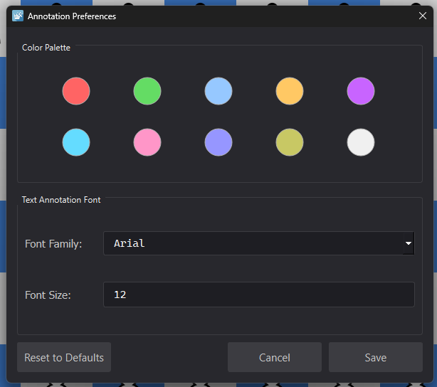The dialog provides the following options:
- Color Palette: Customize the color palette used for annotations. Click any color swatch to open a color picker and select a new color.
- Text Annotation Font: Configure the font family and font size used for text annotations.
- Reset to Defaults: Click the "Reset to Defaults" button to restore the color palette and font settings to their default values.
Changes are saved to your user settings when you click "Save" and will persist across sessions.
5.8.3 Managing Annotations
Annotations are automatically attached to the current move (position) in the game. As you navigate through the game, annotations for each position are shown or hidden automatically.
You can manage annotations using the following options:
- Save Annotations: Use (
Ctrl+Alt+S) to save all annotations to the active game. Annotations are compressed and stored in a PGN metadata tag, keeping the PGN move notation clean. - Clear Move Annotations: Use (
Ctrl+Alt+D) to remove all annotations for the current position. - Clear All Annotations: Use (
Ctrl+Shift+D/⌘+Shift+D) to remove all annotations from the entire game. - Toggle Visibility: Use (
Alt+L/⌥+L) to show or hide the annotation layer on the chessboard.
5.9 Copying and Moving Games
CARA provides practical copy, cut, and paste functionality that allows you to move games between databases, share games with other applications, and work with board positions. This section covers all clipboard operations for games and positions.
5.9.1 Copying Selected Games
To copy one or more games from a database to the clipboard:
- Select games:
In the Database Panel, select one or more games in the game table. You can select multiple games by holdingCtrl(individual selection) orShift(range selection) while clicking. - Copy to clipboard:
Use (Ctrl+Shift+C/⌘+Shift+C) to copy the selected games to your system clipboard as PGN text. The games remain in the source database.
The copied games are stored as standard PGN text, separated by double newlines. You can paste them into another database in CARA, or into any other application that accepts PGN text.
5.9.2 Cutting Selected Games
To move games from one database to another (or remove them from a database):
- Select games:
In the Database Panel, select one or more games in the game table. - Cut to clipboard:
Use (Ctrl+Shift+X) to copy the selected games to your system clipboard and remove them from the source database. If the active game is among the cut games, it will be cleared.
The cut games are stored as PGN text in your clipboard, ready to be pasted into another database. The source database is marked as having unsaved changes.
5.9.3 Pasting Games into a Database
To paste games from the clipboard into a database:
- Ensure PGN is in clipboard:
Make sure your system clipboard contains PGN text (either from copying/cutting games in CARA, or from another application). - Select destination database:
Activate the database tab where you want to paste the games, or use the Clipboard database. - Paste games:
Use (Ctrl+V/⌘+V) to paste into the Clipboard database, or (Ctrl+Alt+V/⌘+⌥+V) to paste into the currently active database.
All games in the clipboard PGN text are added to the selected database. If the clipboard contains multiple games, all are added, and the first game automatically becomes the active game. The destination database is marked as having unsaved changes.
5.9.4 Copying the Active Game PGN
To copy the currently active game's PGN to the clipboard:
- Ensure a game is active:
Make sure you have a game open and active (displayed in the main panel). - Copy PGN:
Use (Ctrl+P/⌘+P) to copy the active game's complete PGN text to your system clipboard.
This copies the full PGN notation of the active game, including all metadata tags, moves, comments, and variations. You can then paste it into another application or share it with others.
5.9.5 Copying and Pasting Board Positions
CARA also supports copying and pasting board positions using FEN (Forsyth-Edwards Notation):
- Copy FEN: Use (
Shift+F) to copy the current board position as FEN notation to your system clipboard. This is useful for sharing specific positions or setting up positions in other chess applications. - Paste FEN: Use (
Ctrl+F/⌘+F) to paste a FEN position from your clipboard and update the chessboard to that position. When a FEN is pasted, the active game is cleared (set to None) since the board position is no longer part of a game sequence.
6. Complete Reference
6.1 File Menu
6.1.1 Clear Clipboard Database
Shortcut: Ctrl+Shift+C / ⌘+Shift+C
Removes all games from the Clipboard database.
6.1.2 Open PGN Database
Shortcut: Ctrl+O / ⌘+O
Opens one or more PGN files from your computer. Each file appears as a separate tab in the Database Panel.
See section 5.2.2 for detailed instructions.
6.1.3 Close PGN Database
Shortcut: Ctrl+W / ⌘+W
Closes the currently active database tab. Any unsaved changes will be lost if you haven't saved the database first.
See section 4.4.5 for more information.
6.1.4 Save PGN Database
Shortcut: Ctrl+S / ⌘+S
Saves the active database to disk, overwriting the existing file.
See section 4.4.5 for more information.
6.1.5 Save PGN Database as...
Shortcut: Ctrl+Shift+S / ⌘+Shift+S
Saves the active database to a new file location. This allows you to create a copy of the database without overwriting the original.
See section 4.4.5 for more information.
6.1.6 Import Games from Online...
Shortcut: Ctrl+Shift+I / ⌘+Shift+I
Opens a dialog to import games from Lichess or Chess.com.
See section 5.2.3 for detailed instructions.
6.1.7 Bulk Replace Tags...
Shortcut: Ctrl+Shift+R / ⌘+Shift+R
Opens a dialog to find and replace text in metadata tags across multiple games.
See section 5.3.2 for detailed instructions.
6.1.8 Bulk Add/Remove Tags...
Shortcut: Ctrl+Alt+T / ⌘+⌥+T
Opens a dialog to add or remove metadata tags across multiple games.
See section 5.3.3 for detailed instructions.
6.1.9 Bulk Clean PGN...
Shortcut: Ctrl+Shift+L / ⌘+Shift+L
Opens a dialog to remove unwanted elements (comments, variations, annotations, etc.) from PGN notation across multiple games.
See section 5.3.4 for detailed instructions.
6.1.10 Deduplicate Games in Active Database...
Shortcut: Ctrl+Shift+U / ⌘+Shift+U
Opens a dialog to identify and remove duplicate games from the active database.
See section 5.3.5 for detailed instructions.
6.1.11 Search Games...
Shortcut: Ctrl+Shift+F / ⌘+Shift+F
Opens a dialog to search for games across databases using multiple criteria and logical operators.
See section 5.4 for detailed instructions.
6.1.12 Close Search Results
Shortcut: Ctrl+Shift+W / ⌘+Shift+W
Closes the Search Results tab in the Database Panel. This menu item is only enabled when a search results tab is open.
6.1.13 Close Application
Shortcut: Ctrl+Q / ⌘+Q
Closes the CARA application. Any unsaved changes in open databases will be lost if you haven't saved them first.
6.2 Edit Menu
6.2.1 Copy FEN
Shortcut: Shift+F
Copies the current board position as FEN (Forsyth-Edwards Notation) to your system clipboard.
See section 5.9.5 for more information.
6.2.2 Copy PGN
Shortcut: Ctrl+P / ⌘+P
Copies the currently active game's complete PGN text to your system clipboard.
See section 5.9.4 for more information.
6.2.3 Copy selected Games
Shortcut: Ctrl+Shift+C / ⌘+Shift+C
Copies the selected games from the active database to your system clipboard as PGN text. The games remain in the source database.
See section 5.9.1 for more information.
6.2.4 Cut selected Games
Shortcut: Ctrl+Shift+X
Copies the selected games to your system clipboard and removes them from the source database.
See section 5.9.2 for more information.
6.2.5 Paste FEN to Board
Shortcut: Ctrl+F / ⌘+F
Pastes a FEN position from your clipboard and updates the chessboard to that position. The active game is cleared when a FEN is pasted.
See section 5.9.5 for more information.
6.2.6 Paste PGN to Clipboard DB
Shortcut: Ctrl+V / ⌘+V
Pastes PGN text from your system clipboard into the Clipboard database. All games in the clipboard are added, and the first game becomes active.
See section 5.2.1 and section 5.9.3 for more information.
6.2.7 Paste PGN to active DB
Shortcut: Ctrl+Alt+V / ⌘+⌥+V
Pastes PGN text from your system clipboard into the currently active database. All games in the clipboard are added, and the first game becomes active.
See section 5.2.1 and section 5.9.3 for more information.
6.3 Board Menu
6.3.1 Rotate Board
Shortcut: X
Toggles the board orientation, rotating it 180 degrees. This is useful for viewing positions from the opposite side's perspective.
6.3.2 Show Game Info
Shortcut: Alt+I / ⌥+I
Toggles the display of game information (players, result, date, etc.) above the chessboard.
6.3.3 Show Coordinates
Shortcut: Alt+C / ⌥+C
Toggles the display of coordinate labels (a-h, 1-8) around the chessboard edges.
6.3.4 Show Turn Indicator
Shortcut: Alt+T / ⌥+T
Toggles the display of the turn indicator showing which side is to move.
See section 4.3.5 for more information.
6.3.5 Show Material
Shortcut: Alt+U / ⌥+U
Toggles the display of the material widget showing captured pieces and material difference.
See section 4.3.4 for more information.
6.3.6 Show Evaluation Bar
Shortcut: Alt+E / ⌥+E
Toggles the display of the evaluation bar showing the engine's assessment of the current position.
See section 4.3.3 for more information.
6.3.7 Show Positional Heat-map
Shortcut: Alt+H / ⌥+H
Toggles the display of the positional heatmap overlay showing positional factors through color-coded gradients.
See section 4.3.6 for detailed information.
6.3.8 Show Played Move
Shortcut: Alt+P / ⌥+P
Toggles the display of an arrow on the chessboard indicating the last move played in the game.
6.3.9 Show Best Next Move
Shortcut: Alt+B / ⌥+B
Toggles the display of an arrow showing the engine's best recommended move (PV1) from manual analysis.
6.3.10 Show Next Best Move (PV2)
Shortcut: Alt+2 / ⌥+2
Toggles the display of an arrow showing the engine's second-best recommended move (PV2) from manual analysis.
6.3.11 Show Next Best Move (PV3)
Shortcut: Alt+3 / ⌥+3
Toggles the display of an arrow showing the engine's third-best recommended move (PV3) from manual analysis.
6.3.12 Show Best Alternative Move
Shortcut: Alt+A / ⌥+A
Toggles the display of an arrow showing the best alternative move found during game analysis (the move that should have been played instead of the actual move).
6.3.13 Show Annotations Layer
Shortcut: Alt+L / ⌥+L
Toggles the visibility of the annotations layer on the chessboard, showing or hiding all custom annotations (text, arrows, circles, squares).
See section 5.8 for more information.
6.3.14 Path trajectory style
Selects the visual style for piece trajectory lines displayed during positional plan exploration:
- Straight: Trajectory lines are drawn as straight segments between squares.
- Bezier: Trajectory lines are drawn as smooth Bezier curves connecting squares.
6.4 PGN Menu
6.4.1 Show Metadata
Shortcut: Ctrl+M / ⌘+M
Toggles the display of PGN header tags (Event, Site, Date, etc.) in the PGN Notation Pane.
See section 4.5 for more information.
6.4.2 Show Comments
Shortcut: Ctrl+Shift+M / ⌘+Shift+M
Toggles the display of move comments in the PGN Notation Pane.
See section 4.5 for more information.
6.4.3 Show Variations
Shortcut: Ctrl+Shift+V / ⌘+Shift+V
Toggles the display of move variations in the PGN Notation Pane.
See section 4.5 for more information.
6.4.4 Show Non-Standard Tags
Shortcut: Ctrl+Shift+T / ⌘+Shift+T
Toggles the display of non-standard tags like [%evp] and [%mdl] within comments in the PGN Notation Pane.
See section 4.5 for more information.
6.4.5 Show Annotations
Shortcut: Ctrl+Shift+A / ⌘+Shift+A
Toggles the display of move annotations (symbols like !, ?, and NAGs) in the PGN Notation Pane.
See section 4.5 for more information.
6.4.6 Show Results
Shortcut: Ctrl+R / ⌘+R
Toggles the display of game results (1-0, 0-1, 1/2-1/2) in the PGN Notation Pane.
See section 4.5 for more information.
6.4.7 Remove Comments
Permanently removes all comments from the active game's PGN notation. This action modifies the game's actual PGN content and cannot be undone. The game will be marked to contain unsaved changes and the changes will be persisted when you save the database.
See section 4.5 for more information.
6.4.8 Remove Variations
Permanently removes all move variations from the active game's PGN notation. This action modifies the game's actual PGN content and cannot be undone. The game will be marked to contain unsaved changes and the changes will be persisted when you save the database.
See section 4.5 for more information.
6.4.9 Remove Non-Standard Tags
Permanently removes non-standard tags (like [%evp] and [%mdl]) from comments in the active game's PGN. This action modifies the game's actual PGN content and cannot be undone. The game will be marked to contain unsaved changes and the changes will be persisted when you save the database.
See section 4.5 for more information.
6.4.10 Remove Annotations
Permanently removes all move annotations (symbols and NAGs) from the active game's PGN notation. This action modifies the game's actual PGN content and cannot be undone. The game will be marked to contain unsaved changes and the changes will be persisted when you save the database.
See section 4.5 for more information.
6.5 Moves List Menu
6.5.1 Column Profiles
The Moves List menu displays all available column profiles at the top. Each profile is a named configuration that defines which columns are visible and their order. Switch between profiles by selecting them from the menu or using number keys 1 through 9 (assigned to the first nine profiles).
See section 4.5.1 for detailed information about column profiles and default profiles.
6.5.2 Save Profile
Shortcut: Ctrl+Shift+P / ⌘+Shift+P
Saves the current column profile, overwriting the existing profile with the current column visibility, order, and width settings.
See section 4.5.1 for more information.
6.5.3 Save Profile as...
Shortcut: Ctrl+Alt+P / ⌘+⌥+P
Creates a new column profile with a custom name, using the current column visibility, order, and width settings. The new profile is then accessible via the Moves List menu and is assigned a keyboard shortcut (1-9) based on its position in the profile list.
See section 4.5.1 for more information.
6.5.4 Remove Profile
Shortcut: Ctrl+Shift+Delete / ⌘+Shift+Delete
Permanently removes the currently active column profile.
6.5.5 Setup Profile...
Opens a dialog for configuring all column settings at once, including column visibility, order, and widths. This provides a convenient way to manage multiple columns simultaneously rather than toggling them individually.
See section 4.5.1 for more information.
6.5.6 Column Visibility
The Moves List menu includes submenus organized by column category for toggling individual column visibility:
- Basic Columns: Move number, White moves, Black moves, Comments
- Evaluation Columns: White/Black evaluations, CPL values (including top-2 and top-3 alternatives)
- Best Moves Columns: Best move alternatives for White/Black (including top-2 and top-3), Top-3 move indicators
- Analysis Columns: Move assessments (Brilliant, Best Move, Inaccuracy, etc.), Engine depth
- Material Columns: Captured pieces, Material counts
- Position Columns: ECO codes, Opening names, FEN positions
Toggle any column's visibility by selecting it from the appropriate submenu. Changes are applied immediately but are not persisted until you save the profile.
See section 4.5.1 for more information.
6.6 Game Analysis Menu
6.6.1 Start Game Analysis
Shortcut: Ctrl+G / ⌘+G
Initiates automatic analysis of the currently active game using the engine assigned to the Game Analysis task. The engine analyzes each move in the game, providing evaluations, move classifications, and best move alternatives.
See section 5.5 for detailed instructions.
6.6.2 Cancel Game Analysis
Shortcut: Escape
Cancels an ongoing game analysis. This menu item is only enabled while analysis is in progress. When cancelled, analysis stops and any moves already analyzed remain in the Moves List. You can resume analysis later from where it left off.
See section 5.5.4 for more information.
6.6.3 Bulk Analyze Database...
Opens a dialog to analyze multiple games at once. CARA automatically optimizes available CPU cores to analyze multiple games in parallel, maximizing analysis speed. Progress and estimated time remaining are displayed in the status bar, and you can cancel and resume bulk analysis at any time.
See section 5.5.5 for detailed instructions.
6.6.4 Configure Classification Settings...
Shortcut: Ctrl+Shift+K / ⌘+Shift+K
Opens a dialog to customize the thresholds used for move classification (Brilliant, Best Move, Good Move, Inaccuracy, Mistake, Blunder). These thresholds determine how moves are categorized based on Centipawn Loss (CPL) values.
See section 5.5.2 for more information about move classifications.
6.6.5 Normalized Evaluation Graph
Shortcut: Ctrl+Shift+N / ⌘+Shift+N
Toggles the normalized evaluation graph display mode in the Moves List. When enabled, evaluation values are normalized to a scale that better highlights relative evaluation changes throughout the game, making it easier to identify critical moments and evaluation swings.
6.6.6 Post-Game Brilliancy Refinement
Toggles whether CARA performs an additional, deeper analysis after initial game analysis specifically to identify "Brilliant" moves. Brilliant moves often involve material sacrifices and may require deeper analysis to be properly classified. When enabled, this refinement step runs automatically after the main analysis completes.
6.6.7 Return to PLY 0 after analysis completes
Toggles whether CARA automatically navigates to the starting position (PLY 0) when analysis completes. When enabled, the board and Moves List automatically return to PLY 0 after analysis finishes.
6.6.8 Switch to Moves List at the start of Analysis
Toggles whether CARA automatically switches to the Moves List tab when analysis begins. This is enabled by default, ensuring you can immediately see analysis results as they are generated.
6.6.9 Switch to Game Summary after Analysis
Toggles whether CARA automatically switches to the Game Summary tab when analysis completes. When enabled, you are taken directly to the condensed overview of key game moments and statistics after analysis finishes.
6.6.10 Store Analysis results in PGN Tag
Toggles whether analysis results (evaluations, CPL values, move classifications) are saved in a PGN metadata tag for persistence across sessions. When enabled, analysis data is serialized and stored in the game's PGN, allowing you to preserve analysis results even after closing and reopening the database.
6.7 Manual Analysis Menu
6.7.1 Start Manual Analysis
Shortcut: Alt+M / ⌥+M
Starts or stops continuous engine analysis of the current position. When enabled, the engine analyzes the current position and displays principal variation lines with evaluations, depths, and move sequences. Analysis continues automatically as you navigate to different positions. Use the same menu item or shortcut again to stop analysis.
See section 5.6.1 for detailed instructions.
6.7.2 Add PV Line
Shortcut: Alt+N / ⌥+N
Adds an additional principal variation line to the MultiPV analysis display. This allows you to compare multiple candidate moves simultaneously. You can add as many lines as needed.
See section 5.6.2 for more information.
6.7.3 Remove PV Line
Shortcut: Alt+R / ⌥+R
Removes the last added principal variation line from the MultiPV analysis display.
See section 5.6.2 for more information.
6.7.4 Enable miniature preview
Toggles the miniature board preview feature. When enabled, hovering over moves in any PV line displays a small chessboard preview showing the position after that move. This helps you quickly visualize the resulting position.
See section 5.6.3 for more information.
6.7.5 Explore PV1 Positional Plans
Toggles positional plan exploration for the first principal variation line. When enabled, the chessboard displays colored trajectory lines showing how pieces move through the engine's recommended sequence. Only one plan can be active at a time.
See section 5.6.4 for detailed instructions.
6.7.6 Explore PV2 Positional Plans
Toggles positional plan exploration for the second principal variation line. When enabled, the chessboard displays colored trajectory lines showing how pieces move through the engine's recommended sequence. Only one plan can be active at a time.
See section 5.6.4 for detailed instructions.
6.7.7 Explore PV3 Positional Plans
Toggles positional plan exploration for the third principal variation line. When enabled, the chessboard displays colored trajectory lines showing how pieces move through the engine's recommended sequence. Only one plan can be active at a time.
See section 5.6.4 for detailed instructions.
6.7.8 Max number of pieces to explore
Sets how many pieces to track in the positional plan exploration visualization. Options are 1, 2, or 3 pieces. The system automatically selects the pieces that move most frequently in the active PV line up to this limit. Each tracked piece is assigned a distinct color and displayed with trajectory lines on the chessboard.
See section 5.6.4 for more information.
6.7.9 Max Exploration depth
Sets the exploration depth for piece trajectories in positional plan exploration. Options are 2, 3, or 4 moves ahead. This determines how many moves into the future the trajectory visualization extends, showing the complete path each piece takes through the engine's recommended sequence.
See section 5.6.4 for more information.
6.7.10 Hide other arrows during plan exploration
Toggles whether other board arrows (played move, best alternative move, PV arrows) are hidden when positional plan exploration is active. When enabled, only the piece trajectory lines are displayed, providing a cleaner view focused on the positional plan visualization.
6.8 Annotations Menu
6.8.1 Clear all Annotations for current game
Shortcut: Ctrl+Shift+D / ⌘+Shift+D
Removes all annotations from the entire active game. This action affects all positions in the game and cannot be undone.
See section 5.8.3 for more information.
6.8.2 Clear all Annotations for current move
Shortcut: Ctrl+Alt+D
Removes all annotations for the current position (move) in the game. Annotations for other positions remain unchanged.
See section 5.8.3 for more information.
6.8.3 Save Annotations to current game
Shortcut: Ctrl+Alt+S
Saves all annotations to the active game by serializing them into a PGN metadata tag. Annotations are compressed and stored separately from the PGN move notation, keeping the PGN clean. This marks the game as modified, and annotations will be persisted when you save the database.
See section 5.8.3 for more information.
6.8.4 Setup Preferences...
Opens the Annotation Preferences dialog for customizing the annotation color palette and text font settings. Changes are saved to your user settings and persist across sessions.
See section 5.8.2 for detailed instructions.
6.9 Engines Menu
6.9.1 Add Engine...
Shortcut: Ctrl+E
Opens a dialog to add a new UCI-compatible chess engine to CARA. You can browse for the engine executable file, and CARA will automatically validate that it supports the UCI protocol. The first engine you add is automatically assigned to all analysis tasks.
See section 5.1.1 for detailed instructions.
- Free engines: Stockfish (open-source, very strong), Berserk (Stockfish derivative), Leela Chess Zero (Lc0) (neural network-based)
- Commercial engines: Shredder, Komodo, ChessBase engines (Fritz, Houdini, etc.)
6.9.2 Engine Submenus
For each configured engine, a submenu is displayed with the engine's name. Each submenu provides the following options:
- Remove Engine: Permanently removes the engine from CARA. If the engine is currently assigned to any tasks, those assignments are cleared. CARA automatically ensures that at least one engine is always assigned to each analysis task.
- Engine Configuration: Opens the engine configuration dialog for setting per-task parameters (thread count, depth limits, time limits, and engine-specific options) for evaluation, game analysis, and manual analysis tasks.
See section 5.1.2 for more information. - Set as Game Analysis Engine: Assigns the engine to the game analysis task.
- Set as Evaluation Engine: Assigns the engine to the evaluation task (used for the evaluation bar).
- Set as Manual Analysis Engine: Assigns the engine to the manual analysis task.
Only one engine can be assigned to each task at a time.
See section 5.1.2 for more information about task assignment.
6.10 AI Summary Menu
6.10.1 AI Model Settings...
Opens a dialog for configuring AI model settings, including API keys and default model selection for the two supported providers OpenAI and Anthropic. You must configure at least one API key and select a model before using the AI Summary feature.
See section 4.5.7 for more information.
To acquire API keys:
- OpenAI: Sign up at platform.openai.com and create an API key in your account settings. Visit platform.openai.com/api-keys to manage your keys.
- Anthropic: Sign up at console.anthropic.com and create an API key in your account settings. Visit console.anthropic.com/settings/keys to manage your keys.
6.10.2 Use OpenAI Models
Toggles whether to use OpenAI models for AI Summary. When enabled, OpenAI models are available for selection. This option is mutually exclusive with "Use Anthropic Models"—only one provider can be active at a time.
6.10.3 Use Anthropic Models
Toggles whether to use Anthropic models for AI Summary. When enabled, Anthropic models are available for selection. This option is mutually exclusive with "Use OpenAI Models"—only one provider can be active at a time.
6.10.4 Include Game Analysis Data in Pre-Prompt
Toggles whether game analysis data (evaluations, move classifications, CPL values, best move alternatives) is included in the pre-prompt sent to the AI model. When enabled, the AI has access to detailed engine analysis, enabling more accurate assessments of moves and positions.
6.10.5 Include PGN Metadata tags in Pre-Prompt
Toggles whether PGN metadata tags (player names, ELO ratings, event information, etc.) are included in the pre-prompt sent to the AI model. When enabled, the AI has access to game metadata, providing context for more informed responses.
6.11 Help Menu
6.11.1 About...
Opens the About dialog displaying application information, including the application name, version number, description, and copyright information. The dialog provides a quick reference for identifying the CARA version you are using.
6.12 Complete Keyboard Shortcuts
This section provides a comprehensive reference of all keyboard shortcuts in CARA.
6.12.1 Game Navigation
Essential shortcuts for navigating through games:
Right Arrow: Navigate to next moveLeft Arrow: Navigate to previous move
6.12.2 Detail Panel Tabs
Quick access to different analysis views:
F1: Switch to Moves List tabF2: Switch to Metadata tabF3: Switch to Manual Analysis tabF4: Switch to Game Summary tabF5: Switch to Player Stats tabF6: Switch to Annotations tabF7: Switch to AI Summary tab
6.12.3 Game Analysis
Shortcuts for analyzing games:
Ctrl+G/⌘+G: Start game analysis for the current gameEscape: Cancel ongoing game analysisCtrl+Shift+K/⌘+Shift+K: Configure move classification settingsCtrl+Shift+N/⌘+Shift+N: Toggle normalized evaluation graph mode
6.12.4 File Operations
Standard file management shortcuts:
Ctrl+O/⌘+O: Open PGN databaseCtrl+S/⌘+S: Save active PGN databaseCtrl+Shift+S/⌘+Shift+S: Save active PGN database as...Ctrl+W/⌘+W: Close active PGN databaseCtrl+Q/⌘+Q: Close application
6.12.5 Importing and Opening Games
Shortcuts for importing and opening games:
Ctrl+V/⌘+V: Paste PGN to Clipboard databaseCtrl+Alt+V/⌘+⌥+V: Paste PGN to active databaseCtrl+Shift+I/⌘+Shift+I: Import games from online platforms
6.12.6 Copy and Cut Operations
Shortcuts for copying and moving game data:
Ctrl+P/⌘+P: Copy active game PGN to clipboardShift+F: Copy current board position (FEN) to clipboardCtrl+F/⌘+F: Paste FEN position to boardCtrl+Shift+C/⌘+Shift+C: Copy selected games to clipboardCtrl+Shift+X: Cut selected games to clipboard
6.12.7 Moves List Column Profiles
Shortcuts for managing and switching column profiles:
1-9: Switch to column profile 1 through 9Ctrl+Shift+P/⌘+Shift+P: Save current profileCtrl+Alt+P/⌘+⌥+P: Save current profile as...Ctrl+Shift+Delete/⌘+Shift+Delete: Remove current profile
6.12.8 Board Display Options
Shortcuts for toggling board display elements:
X: Rotate board 180 degreesAlt+C/⌥+C: Toggle coordinates displayAlt+T/⌥+T: Toggle turn indicatorAlt+I/⌥+I: Toggle game information displayAlt+E/⌥+E: Toggle evaluation barAlt+U/⌥+U: Toggle material widgetAlt+H/⌥+H: Toggle positional heatmapAlt+P/⌥+P: Toggle played move arrowAlt+B/⌥+B: Toggle best next move arrow (PV1)Alt+2/⌥+2: Toggle PV2 arrowAlt+3/⌥+3: Toggle PV3 arrowAlt+A/⌥+A: Toggle best alternative move arrowAlt+L/⌥+L: Toggle annotations layer
6.12.9 Manual Analysis
Shortcuts for manual position analysis:
Alt+M/⌥+M: Start or stop continuous engine analysisAlt+N/⌥+N: Add principal variation lineAlt+R/⌥+R: Remove principal variation line
6.12.10 Annotations
Shortcuts for managing annotations:
Ctrl+Alt+S: Save annotations to current gameCtrl+Alt+D: Clear all annotations for current moveCtrl+Shift+D/⌘+Shift+D: Clear all annotations for current game
6.12.11 Engine Management
Shortcuts for managing chess engines:
Ctrl+E: Add engine
6.12.12 Database Operations
Shortcuts for database management and bulk operations:
Ctrl+Shift+F/⌘+Shift+F: Search games across databasesCtrl+Shift+W/⌘+Shift+W: Close search results tabCtrl+Shift+R/⌘+Shift+R: Bulk replace tagsCtrl+Alt+T/⌘+⌥+T: Bulk add/remove tagsCtrl+Shift+L/⌘+Shift+L: Bulk clean PGNCtrl+Shift+U/⌘+Shift+U: Deduplicate gamesCtrl+Shift+C/⌘+Shift+C: Clear Clipboard database
6.12.13 PGN Display Options
Shortcuts for controlling PGN notation display:
Ctrl+M/⌘+M: Toggle metadata displayCtrl+Shift+M/⌘+Shift+M: Toggle comments displayCtrl+Shift+V/⌘+Shift+V: Toggle variations displayCtrl+Shift+T/⌘+Shift+T: Toggle non-standard tags displayCtrl+Shift+A/⌘+Shift+A: Toggle annotations displayCtrl+R/⌘+R: Toggle results display
7. Advanced Topics
7.1 Customizing config.json
The config.json file controls all UI styling, layout dimensions, colors, fonts, and application-wide default settings. While the file is read-only from the application's perspective, you can manually edit it to customize CARA's appearance without modifying any source code.
7.1.1 File Structure
The config.json file is located in the app/config/ directory and uses a hierarchical JSON structure. Colors are specified as RGB arrays with values from 0 to 255 (e.g., [217, 217, 217] for light gray). Font sizes are specified in points, and dimensions are in pixels.
7.1.2 Example: Changing Chessboard Square Colors
To change the colors of the chessboard squares:
- Locate the squares configuration:
Openconfig.jsonin a text editor and navigate to:
ui → panels → main → board → squares - Modify the color values:
You'll find two color properties:"light_color": [217, 217, 217]- Color for light squares (default: light gray)"dark_color": [58, 117, 196]- Color for dark squares (default: blue)
"squares": { "light_color": [240, 217, 181], "dark_color": [181, 136, 99] } - Save and restart:
Save the file and restart CARA for the changes to take effect. If the JSON syntax is invalid, CARA will display an error message and may fail to start.
config.json before making changes. Invalid JSON syntax will prevent CARA from starting. Use a JSON validator or text editor with JSON syntax checking to ensure your changes are valid.
7.1.3 Other Common Customizations
You can customize many other visual elements in config.json:
- Arrow colors: Modify colors for played move, best move, PV arrows, and best alternative move arrows in
ui → panels → main → board - Font families and sizes: Change fonts throughout the application in various
font_familyandfont_sizeproperties - Dialog dimensions: Adjust dialog widths and heights in
ui → dialogs - Panel colors: Modify background colors, borders, and text colors in
ui → panels - Move classification colors: Customize colors for move classifications (Brilliant, Best Move, Inaccuracy, etc.) in
ui → panels → detail → moveslist → colors
7.2 Understanding user_settings.json
The user_settings.json file stores your personal preferences and settings. While most settings are managed through the application interface, understanding the file structure can be helpful for advanced users who want to manually edit settings or transfer configurations between installations.
7.2.1 File Structure
The file contains several main sections:
- moves_list_profiles: Column profile definitions with visibility, width, and order settings for each profile
- active_profile: The currently active column profile name
- board_visibility: Toggle states for board display elements (coordinates, arrows, evaluation bar, etc.)
- pgn_visibility: Toggle states for PGN notation display options
- game_analysis: Game analysis preferences (return to PLY 0, switch tabs, etc.)
- manual_analysis: Manual analysis settings (max pieces to explore, exploration depth, etc.)
- engines: List of configured engines with their paths and metadata
- engine_assignments: Engine assignments for each analysis task
- ai_models: AI model configurations for OpenAI and Anthropic providers
- ai_summary: AI Summary preferences
- annotations: Annotation color palette and font settings
7.2.2 Manual Editing Considerations
While you can manually edit user_settings.json, be aware that:
- The file is automatically overwritten when you save settings through the application
- Invalid JSON syntax will cause the application to fail loading settings (it will fall back to defaults)
- Some settings have dependencies (e.g.,
active_profilemust reference a profile that exists inmoves_list_profiles) - It's recommended to close CARA before editing the file to avoid conflicts
7.3 Understanding engine_parameters.json
The engine_parameters.json file stores engine-specific parameters and options for each configured chess engine. This file is automatically managed by the application, but understanding its structure can help with advanced engine configuration.
7.3.1 File Structure
The file contains a dictionary mapping engine IDs to parameter configurations. Each engine entry includes:
- Per-task parameters: Separate parameter sets for
evaluation,game_analysis, andmanual_analysistasks - Thread count: Number of CPU threads to use
- Depth limits: Maximum search depth
- Time limits: Time per move or position
- Engine-specific options: UCI options specific to each engine (e.g., Hash size, MultiPV, etc.)
7.3.2 Manual Editing
Manual editing of engine_parameters.json is generally not recommended, as the application manages this file automatically. However, if you need to make advanced changes:
- Close CARA before editing to avoid conflicts
- Ensure the engine ID matches an engine in
user_settings.json - Validate that UCI option names and values are correct for your engine
- Back up the file before making changes
7.4 PGN Metadata Tags Used by CARA
CARA uses several custom PGN metadata tags to store analysis data and annotations. Understanding these tags can help you work with CARA-generated PGN files in other applications or manually inspect the stored data.
7.4.1 Analysis Data Tags
When "Store Analysis results in PGN Tag" is enabled, CARA stores analysis data in compressed format:
- [CARAAnalysisData "..."]: Contains compressed, base64-encoded JSON data with evaluations, CPL values, move classifications, best moves, and engine depths for each move
- [CARAAnalysisInfo "..."]: Contains metadata about the analysis (app version, creation date/time)
- [CARAAnalysisChecksum "..."]: SHA-256 checksum for data integrity validation
The analysis data is stored as gzip-compressed JSON, then base64-encoded to ensure it's valid within PGN tag values. This keeps the PGN file size manageable while preserving all analysis information.
7.4.2 Annotation Tags
When annotations are saved to a game, CARA stores them in a similar compressed format:
- [CARAAnnotations "..."]: Contains compressed, base64-encoded JSON data with all annotation objects (text, arrows, circles, squares) organized by move (ply index)
- [CARAAnnotationsInfo "..."]: Contains metadata about the annotations (app version, creation date/time)
- [CARAAnnotationsChecksum "..."]: SHA-256 checksum for data integrity validation
Each annotation includes its type, position, color, size, rotation, and other properties. The data is compressed and encoded to keep PGN files clean and manageable.
7.4.3 Tag Visibility
These custom tags are automatically hidden from the PGN Notation Pane display to keep the move notation clean. They are always excluded from PGN view, regardless of the "Show Non-Standard Tags" setting. The tags remain in the PGN file and are preserved when saving databases.
7.5 Troubleshooting
This section covers common issues and their solutions.
7.5.1 Application Won't Start
If CARA fails to start, check the following:
- Invalid config.json: If you've edited
config.json, verify the JSON syntax is valid. Use a JSON validator or text editor with JSON syntax checking. Restore from backup if needed. - Missing dependencies: Ensure all required Python libraries are installed. Run
pip listto verify PyQt6, python-chess, and requests are present. - Python version: Verify you're using Python 3.8 or higher with
python --version.
7.5.2 Engine Validation Errors
If an engine fails validation:
- Check engine path: Ensure the engine executable path is correct and the file exists
- Verify UCI support: The engine must support the UCI (Universal Chess Interface) protocol
- Check permissions: Ensure the engine executable has execute permissions
- Test engine manually: Try running the engine from the command line to verify it works
7.5.3 Settings Not Persisting
If your settings aren't being saved:
- Check file permissions: Ensure CARA has write permissions in its directory for
user_settings.jsonandengine_parameters.json - Verify file location: Check that settings files are being created in the CARA root directory
- Check for errors: Look for error messages in the status bar or console output
7.5.4 Analysis Not Working
If game analysis isn't working:
- Verify engine assignment: Ensure an engine is assigned to the "Game Analysis" task via
- Check engine status: Verify the engine is valid and can be started
- Review engine parameters: Check that engine parameters (threads, depth, time) are reasonable
- Check system resources: Ensure you have sufficient CPU and memory available
7.6 Performance Optimization
This section provides tips for optimizing CARA's performance, especially when working with large databases or performing intensive analysis.
7.6.1 Engine Configuration
Optimize engine performance by configuring appropriate parameters:
- Thread count: Set thread count to match your CPU core count for maximum parallelization. For bulk analysis, CARA automatically optimizes thread usage across multiple games.
- Task-specific engines: Use a fast engine for evaluation (continuous updates) and a stronger engine for deep game analysis
- Depth vs. time: For faster analysis, use time limits rather than depth limits. For deeper analysis, use depth limits with appropriate thread counts
7.6.2 Database Management
Improve performance when working with large databases:
- Split large databases: Consider splitting very large databases (10,000+ games) into smaller files for faster loading and searching
- Use search filters: Use the search function to work with filtered subsets rather than loading entire large databases
- Close unused databases: Close database tabs you're not actively using to free memory
7.6.3 Analysis Workflow
Optimize your analysis workflow:
- Bulk analysis: Use bulk analysis for multiple games rather than analyzing them individually. CARA automatically parallelizes analysis across available CPU cores
- Disable unnecessary features: Turn off features you're not using (e.g., positional heatmap, evaluation bar) during analysis to reduce overhead
- Store analysis results: Enable "Store Analysis results in PGN Tag" to avoid re-analyzing games, but be aware this increases PGN file size
7.7 Moves List Columns Reference
The following table describes all available columns:
| Column Name | Description |
|---|---|
| Basic Columns | |
| # | Move number (1, 2, 3, ...) |
| White | White's move in SAN notation |
| Black | Black's move in SAN notation |
| Comment | Move comments from PGN |
| Evaluation Columns | |
| Eval White | Evaluation after white's move (formatted as "+X.X" or "M{N}") |
| Eval Black | Evaluation after black's move (formatted as "-X.X" or "-M{N}") |
| CPL White | Centipawn loss for white's move. CPL measures evaluation lost by playing a move instead of the best move: CPL = |eval_after_best_move - eval_after_played_move| |
| CPL Black | Centipawn loss for black's move |
| CPL White 2 | CPL for white's move vs. PV2 (second-best engine move) |
| CPL White 3 | CPL for white's move vs. PV3 (third-best engine move) |
| CPL Black 2 | CPL for black's move vs. PV2 (second-best engine move) |
| CPL Black 3 | CPL for black's move vs. PV3 (third-best engine move) |
| Best Moves Columns | |
| Best White | Engine's best move suggestion for white (SAN notation) |
| Best Black | Engine's best move suggestion for black (SAN notation) |
| Best White 2 | Engine's second-best move (PV2) for white |
| Best White 3 | Engine's third-best move (PV3) for white |
| Best Black 2 | Engine's second-best move (PV2) for black |
| Best Black 3 | Engine's third-best move (PV3) for black |
| White Is Top 3 | "✓" if white's move matches any top 3 engine moves, empty otherwise |
| Black Is Top 3 | "✓" if black's move matches any top 3 engine moves, empty otherwise |
| Analysis Columns | |
| Assess White | Move quality assessment for white's move (Brilliant, Best Move, Good Move, Inaccuracy, Mistake, Blunder, Miss, or Book Move). Assessment thresholds are configurable in the classification settings. |
| Assess Black | Move quality assessment for black's move. Assessment thresholds are configurable in the classification settings. |
| White Depth | Engine search depth for white's move analysis |
| Black Depth | Engine search depth for black's move analysis |
| Material Columns | |
| White Capture | Piece captured by white's move (e.g., "P", "N", "R") |
| Black Capture | Piece captured by black's move (e.g., "P", "N", "R") |
| White Material | White's material balance in centipawns after move (calculated using piece values: Pawn: 100, Knight/Bishop: 300, Rook: 500, Queen: 900) |
| Black Material | Black's material balance in centipawns after move |
| Position Columns | |
| Eco | ECO code (opening classification, e.g., "B20") |
| Opening Name | Opening name from ECO database |
| FEN White | FEN string of position after white's move |
| FEN Black | FEN string of position after black's move |
7.8 Customizing ELO and Accuracy Formulas
CARA allows you to customize the formulas used to calculate estimated ELO ratings and accuracy percentages for players. These formulas are defined in config.json.
7.8.1 Configuration Location
The formula configurations are located in config.json under the game_analysis section:
game_analysis → elo_estimation- Formula for estimating player ELOgame_analysis → accuracy_formula- Formula for calculating overall player accuracygame_analysis → phase_accuracy_formulas- Formulas for calculating phase-specific accuracy (opening, middlegame, endgame)
7.8.2 Formula Structure
Each formula configuration contains the following fields:
formula: A string containing the mathematical expression to evaluate. If omitted or empty, CARA uses the default formula.value_on_error: The value to return if the formula evaluation fails (default:0for ELO,0.0for accuracy)._examples: (Optional) A dictionary of example formulas for reference. These are not used by the application but serve as documentation.
config.json before making changes. Invalid JSON syntax will prevent CARA from loading the configuration file. Formula evaluation errors will cause CARA to use the value_on_error value. If the formula field is missing or empty, CARA will use the default formula.
7.8.3 Available Variables
Variables for Overall Accuracy and ELO Formulas: The following variables are available for use in overall accuracy and ELO estimation formulas:
total_moves: Total number of moves in the game (integer)non_book_moves: Number of moves analyzed (excluding book moves) (integer)book_moves: Number of book moves (moves found in opening books) (integer)blunders: Number of blunders made by the player (integer)mistakes: Number of mistakes made by the player (integer)inaccuracies: Number of inaccuracies made by the player (integer)misses: Number of missed opportunities (brilliant moves not played) (integer)best_moves: Number of best moves played (integer)good_moves: Number of good moves played (integer)brilliant_moves: Number of brilliant moves played (integer)average_cpl: Average centipawn loss across all analyzed moves (float)median_cpl: Median centipawn loss across all analyzed moves (float)min_cpl: Minimum centipawn loss (best move) (float)max_cpl: Maximum centipawn loss (worst move) (float)blunder_rate: Blunder rate as a decimal (0.0 to 1.0) (float)mistake_rate: Mistake rate as a decimal (0.0 to 1.0) (float)accuracy: Calculated accuracy percentage (0.0 to 100.0) (float) - Note: This variable is only available in the ELO formula, not in the accuracy formula itself (to avoid circular dependency)has_won:1if the player won the game,0otherwise (integer)has_drawn:1if the game was a draw or had an undefined result,0otherwise (integer)opening_moves: Total number of moves in the opening phase (integer)middlegame_moves: Total number of moves in the middlegame phase (integer)endgame_moves: Total number of moves in the endgame phase (integer)average_cpl_opening: Average centipawn loss in the opening phase (float)average_cpl_middlegame: Average centipawn loss in the middlegame phase (float)average_cpl_endgame: Average centipawn loss in the endgame phase (float)
Variables for Phase-Specific Accuracy Formulas: Phase-specific accuracy formulas (opening, middlegame, endgame) have access to all the variables above, plus the following phase-specific and overall comparison variables:
total_moves: Number of moves in this specific phase (integer) - Note: In phase formulas, this refers to the phase-specific move count, not the overall gameblunders: Number of blunders in this specific phase (integer)mistakes: Number of mistakes in this specific phase (integer)inaccuracies: Number of inaccuracies in this specific phase (integer)misses: Number of misses in this specific phase (integer)best_moves: Number of best moves in this specific phase (integer)good_moves: Number of good moves in this specific phase (integer)brilliant_moves: Number of brilliant moves in this specific phase (integer)blunder_rate: Blunder rate for this specific phase (0.0 to 1.0) (float)mistake_rate: Mistake rate for this specific phase (0.0 to 1.0) (float)average_cpl: Average centipawn loss for this specific phase (float) - Note: In phase formulas, this refers to the phase-specific CPLtotal_moves_overall: Total number of moves in the entire game (integer)non_book_moves_overall: Total number of analyzed moves in the entire game (integer)book_moves_overall: Total number of book moves in the entire game (integer)blunders_overall: Total number of blunders in the entire game (integer)mistakes_overall: Total number of mistakes in the entire game (integer)inaccuracies_overall: Total number of inaccuracies in the entire game (integer)misses_overall: Total number of misses in the entire game (integer)best_moves_overall: Total number of best moves in the entire game (integer)good_moves_overall: Total number of good moves in the entire game (integer)brilliant_moves_overall: Total number of brilliant moves in the entire game (integer)blunder_rate_overall: Overall blunder rate for the entire game (0.0 to 1.0) (float)mistake_rate_overall: Overall mistake rate for the entire game (0.0 to 1.0) (float)average_cpl(overall context): Overall average centipawn loss for the entire game (float) - Note: This is also available as a separate variable for comparison
_overall suffix refer to statistics for that specific phase, while variables with the _overall suffix refer to statistics for the entire game. This allows you to compare phase performance against overall game performance.
7.8.4 Available Functions
The following functions are available in all formulas:
min(x, y): Returns the minimum of two valuesmax(x, y): Returns the maximum of two valuesabs(x): Returns the absolute value of a numberint(x): Converts a value to an integernot(x): Returns the logical negation of a value (1 if x is 0/false, 0 if x is non-zero/true)
Standard mathematical operators are also supported: +, -, *, /, ** (exponentiation), and parentheses for grouping.
min() and max() functions in your formulas to ensure values stay within desired ranges. For example, to clamp accuracy between 5.0 and 100.0, use: max(5.0, min(100.0, your_formula))
7.8.5 ELO Estimation Formula
The ELO estimation formula calculates an estimated ELO rating based on player performance. You should use max(0, ...) in your formula to ensure negative ELO values are not returned.
Default Formula:
"formula": "max(0, int(2800 - (average_cpl * 8.5) - ((blunder_rate * 50 + mistake_rate * 20) * 40)))"Example Custom Formulas:
A simplified formula that only considers average centipawn loss:
"formula": "max(0, int(2800 - (average_cpl * 10)))"Add a bonus for wins and a penalty for losses (when the player has not won and has not drawn):
"formula": "max(0, int(2800 - (average_cpl * 8.5) - ((blunder_rate * 50 + mistake_rate * 20) * 40) + (has_won * 50) - ((1 - has_won) * (1 - has_drawn) * 30)))"Directly converts accuracy percentage to ELO (e.g., 90% accuracy ≈ 2520 ELO):
"formula": "max(0, int(accuracy * 28))"7.8.6 Accuracy Formula
The accuracy formula calculates a player's accuracy percentage. You should use max(min_value, min(100.0, your_formula)) in your formula to ensure the result stays within the desired range (typically 0.0 to 100.0, though the default formula uses 5.0 as the minimum).
Default Formula:
"formula": "max(5.0, min(100.0, 100.0 - (average_cpl / 3.5)))"Example Custom Formulas:
A simplified formula with a different scaling factor:
"formula": "100.0 - (average_cpl / 2.0)"Ensures accuracy never drops below 10%:
"formula": "max(10.0, 100.0 - (average_cpl / 3.0))"Applies an additional penalty based on blunder rate:
"formula": "max(0.0, 100.0 - (average_cpl / 3.5) - (blunder_rate * 100))"7.8.7 Phase-Specific Accuracy Formulas
CARA supports separate accuracy formulas for each game phase (opening, middlegame, and endgame). These formulas are configured under game_analysis → phase_accuracy_formulas in config.json.
Each phase has its own formula configuration with the same structure as the overall accuracy formula:
phase_accuracy_formulas → opening → formula- Formula for opening phase accuracyphase_accuracy_formulas → middlegame → formula- Formula for middlegame phase accuracyphase_accuracy_formulas → endgame → formula- Formula for endgame phase accuracy
Default Phase Formulas:
"opening": {
"formula": "max(5.0, min(100.0, 100.0 - (average_cpl_opening / 3.5)))",
"value_on_error": 0.0
},
"middlegame": {
"formula": "max(5.0, min(100.0, 100.0 - (average_cpl_middlegame / 3.5)))",
"value_on_error": 0.0
},
"endgame": {
"formula": "max(5.0, min(100.0, 100.0 - (average_cpl_endgame / 3.5)))",
"value_on_error": 0.0
}Example: Comparing Phase Performance to Overall Game:
"formula": "max(5.0, min(100.0, 100.0 - (average_cpl_opening / 3.5) - ((blunder_rate - blunder_rate_overall) * 30.0)))"This formula penalizes the opening phase accuracy if the opening blunder rate is higher than the overall game blunder rate.
7.8.8 Editing Formulas
To customize a formula:
Locate the formula configuration:
Open config.json in a text editor and navigate to: game_analysis → elo_estimation, game_analysis → accuracy_formula, or game_analysis → phase_accuracy_formulas (for phase-specific formulas)
Modify the formula string:
Edit the "formula" field with your desired expression. For example:
"elo_estimation": {
"formula": "max(0, int(2800 - (average_cpl * 10)))",
"value_on_error": 0
}Set error handling (optional):
Adjust "value_on_error" to specify what value should be returned if the formula evaluation fails. This is useful for debugging or providing fallback values.
Save and restart:
Save the file and restart CARA for the changes to take effect. The new formulas will be used for all game summaries and player statistics calculations.
value_on_error value.
7.8.9 Player Statistics
When calculating player statistics across multiple games, CARA calculates ELO and accuracy for each individual game using the configured formulas, then averages these values. This approach ensures that each game contributes equally to the final statistics, regardless of game length or number of moves analyzed.
For example, if a player has three games with ELO estimates of 1800, 1900, and 2000, the player's average ELO will be 1900, not a single calculation based on all moves combined.